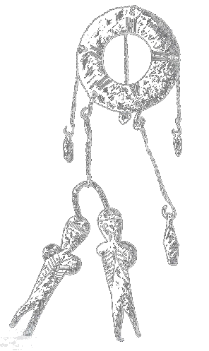

Tę pierwszą napisaną przeze mnie grę paragrafową dedykuję wszystkim moim
przyjaciołom, dla których miałem okazję prowadzić wszelakie gry
fabularne, a w szczególności:
Zbyszkowi Tenerowiczowi, Arkowi Ostrycharzowi, Dominice Borkowskiej, Kasi
Hajduk, Kubie Eichlerowi, Pawłowi Czapiewskiemu, Markowi Janikowi,
Dagmarze Kuźmińskiej, a także Paulinie Freitag, by dalej pragnęła zgłębiać
tajemny świat RPG.
Witaj Drogi Adepcie!
Oddaję Ci owoc pracy mych rąk. Mam nadzieję, że przygoda i prawdy w nim zawarte uraczą Twój umysł i odkryją fakty wzbogacające Twą duszę.
Jeśli masz wątpliwości, jak ową książkę czytać, posłuchaj mych wskazówek.
Oto pierwsza. Dzieło, które masz przed sobą nie jest zwykłą mini-powieścią czy opowiadaniem. Nie czyta się go od pierwszej do ostatniej strony, lecz od paragrafu do paragrafu. Na końcu każdego z nich zostajesz obarczony ciężarem decyzji, która wpłynie na Twą dalszą historię i albo zaprowadzi Cię do szczęśliwego końca, albo na zatracenie. Jest kilka sposobów ukończenia powieście; w tym dwa z nich w miarę bezpieczne, inne zaś oznaczają zgubę.
Druga wskazówka. Nie czytasz opowieści o jakimś obcym człowieku, nie jesteś tu widzem. Jesteś osobą, która żyje w przedstawionym świecie i w nim podróżuje.
Trzecia wskazówka. By zacząć lekturę musi Twój umysł odrzucić na chwilę swą cielesną powłokę i wcielić się w człowieka żyjącego w świecie tej opowieści. Od teraz Ty nim jesteś.
Czwarta wskazówka. KARTA POSTACI może być Ci bardzo użyteczna. Na niej jest miejsce, gdzie możesz wpisywać znalezione w czasie gry przedmioty. Nie jest ich dużo, lecz każdy na wagę złota. Bacz, byś nie zapomniał wpisać przedmiotu, który znajdziesz, gdyż przez to czekać Cię może płacz i zgrzytanie zębów. Z tyłu karty masz też napisane słowo „wytrzymałość”, a pod nim kilka kresek. Za każdym razem, gdy odniesiesz jakąś ranę, skreśl tyle kresek, ile WT(współczynników wytrzymałości) zostało Ci odjęte.
Piąta wskazówka. Choć Tajemne Oblicze Świata możesz czytać na komputerze, zastanów się czy warto. Nie do końca taka jest idea gier książkowych. Lepiej wydrukuj ją i w nocnej ciszy, kiedy nikt widzieć Cię nie będzie, wyjmij z ukrycia, zapal świeczkę, przygotuj monetę i rozpocznij podróż. Niech mrok i cisza będą Twoimi towarzyszami. O wiele lepiej doświadczysz tego, co przeżył Twój awatar.
Kimże ON jest? To przeciętny człowiek... a może i nie? Pracuje dzień w dzień w firmie komputerowej, by zarobić na nieszczęsny żywot na tym padole łez. Zdolny, inteligenty, acz trochę chuderlawy. Pewnego dnia znajduje przed swym domem dziwną wiadomość... i od tego momentu Ty się nim stajesz i zadecydujesz, jak potoczą się jego losy.
Mało jest fikcji w moim dziele. Informacje w nim zawarte pochodzą z wiedzy przeze mnie nabytej. Studiuję nauki tajemne i wiedzę o religiach wszelaką, stąd możesz być pewien, że niewiele tu moich wymysłów. Gdy skończysz książkę i wierzyć mi nie będziesz - napisz (magazyn.masz.wybor@gmail.com), a polecę Ci dzieła, gdzie prawdy o których mówię, zostały opisane lub podeślę któreś z moich żakowskich opracowań, gdzie w skrócie dziwne zjawiska opisuję.
Jakimże człowiek potrafi być ignorantem… „Wydaje mi się, że największym dobrodziejstwem na tym świecie jest fakt, że umysł ludzki nie jest w stanie skorelować całej swej istoty. Żyjemy na spokojnej wyspie ignorancji, pośród mórz nieskończoności i wcale nie jest powiedziane, że w swej podróży zawędrujemy daleko.”
Słowa oszalałego samotnika odbijają się w naszych wspólnych głowach. Tak naprawdę żyjemy w pełnym grozy świecie - koszmar otacza nas zewsząd, a nasza natura jest nim przesiąknięta. Płyniemy w nim, oddychamy nim, pijemy i spożywamy go. Nasze umysły bronią się przed świadomością tego przerażającego faktu, tworząc idee świata nieistniejącego, lepszego, żeby tylko odwrócić naszą uwagę od tego, który rzeczywiście zamieszkujemy. Gdybyś tylko przyjrzał się historii życia swojego przyjaciela, ojca, matki, sąsiada czy nawet pierwszej lepszej napotkanej istoty, zrozumiałbyś tak wiele… Wyraziłeś życzenie poznania prawdy, tak? Całej prawdy, tak? No dobrze, spełnię Twoją wolę w ułamku. TYLKO W UŁAMKU. Inaczej świadomość koszmaru mógłby Cię zabić, Przyjacielu.
1
Stoisz na ganku przed swoim domem i patrzysz na tajemniczy list. Znalazłeś go przed wejściem. Śliski papier był pokryty delikatną warstwą szronu, więc całkiem możliwe, że zostawiono go tutaj jeszcze w nocy. Kto mógłby napisać do Ciebie coś tak dziwnego? Może to znów apel jakichś sekciarskich popaprańców? Ha! Być może takie świstki są na ganku każdego domu?
Jesteś ciepło ubrany i gotowy do wyjścia do pracy. Zimny listopadowy wiatr niczym chluśnięcie lodowatej wody orzeźwia Twoją twarz.
Otrząsasz się z zamyślenia. Spoglądasz odruchowo na zegarek. Ciekłokrystaliczny wyświetlacz elektronicznej chińskiej tandety dumnie nazywanej przez sprzedawcę zegarkiem wskazuje godzinę: 7:21. Jeszcze chwila a spóźnisz się na tramwaj o 7:26, a wtedy w ogóle spóźnisz się do pracy. W firmie komputerowej, w której pracujesz nie tolerują tego, a niełatwo dostać się z przedmieścia na starówkę.
Co robisz?
Biegniesz co sił na tramwaj, chowając list do kieszeni [dopisz „dziwny list” do ekwipunku”].
Biegniesz na tramwaj, wyrzucając list po drodze.
2
Szybko zerwałeś się do biegu. Zimne powietrze boleśnie kuje płuca. Po chwili łapiesz zadyszkę i zaczynasz kaszleć. Mimo to biegniesz dalej. Wiesz, że każda sekunda jest ważna – najwyżej odpoczniesz w tramwaju. Nagle tracisz równowagę i BUUUM [-1 WT; skreśl jedną kreskę za napisem „wytrzymałość” na karcie postaci - ostatnia kartka].
Leżysz na ziemi i starasz się zrozumieć, co się stało. Ach tak! Poślizgnąłeś się na oszronionym trawniku. Dotykasz swojej głowy i czujesz ciepłą, lepką substancję sączącą się znad Twojej skroni. To krew.
Uświadamiasz sobie, że jesteś już tuż przed przystankiem. Widzisz nadjeżdżający tramwaj. Jeśli chcesz dokończyć swoją gonitwę zdążysz jeszcze do niego wsiąść. Ból głowy jest jednak silny, lekko kręci Ci się w głowie... Może jednak lepiej nie ryzykować i pojechać do szpitala?
Co robisz?
Dzwonię po karetkę. Jeśli kierownictwo dalej chce być bandą bezdusznych skurwieli, to niech mnie zwolnią – proszę bardzo!
Biegnę na tramwaj. Obecnie ta praca jest dla mnie jedynym źródłem utrzymania. Jeśli nie dotrę na czas, prawdopodobnie mnie zwolnią (jestem młody stażem, a kierownictwo do takich jak ja nie jest przychylnie nastawione).
3
Wskakujesz do tramwaju w ostatniej chwili, akurat gdy odezwał się dzwonek obwieszczający zamknięcie drzwi. Jesteś w środku, udało się. Uff… jaka ulga. Tramwaj ruszył z miejsca, możesz odpocząć. Jest dość tłoczno. Spostrzegasz, że ludzie patrzą na Ciebie jakby z litością i obawą. Czego oni chcą? Ach tak! Rana! Szukasz w kieszeniach chusteczek higienicznych, lecz nie znajdujesz żadnej. Cholera.
Zaraz, zaraz…
Masz list. Próbujesz nim zatamować krwotok.
Masz list i nie próbujesz zatamować nim krwotoku.
Nie masz listu. Próbujesz zdusić krwawienie dłonią.
4
Wyjmujesz wymiętą kartkę. No cóż, skoro nie masz niczego innego… trzeba sobie jakoś radzić. Przykładasz ją do skroni. Papier jest trochę szorstki, ale nie zadaje dotkliwego bólu. Nie na długo jednak się przyda - jest słabo higroskopijny. Już teraz kapią spod niego malutkie kropelki krwi.
Ktoś szturcha Cię w ramię. To jakaś poczciwa babcina. Podaje Ci czystą, płócienną chustkę. Uśmiecha się życzliwie, gdy jej dziękujesz. Patrzysz na zakrwawiony list i nagle pod tekstem krew zlewa się w jakiś wzór, by po chwili ułożyć się w napis:
Zapamiętaj wszystko co zobaczysz.
Nic tu nie jest bez znaczenia.
Zastanów się nad tym i PAMIĘTAJ o tym co ważne.
Patrzysz zszokowany na kartkę i po chwili czujesz zawroty głowy…
Przejdź do paragrafu .
5
Wyciągasz list z kieszeni… nie, to nie jest dobry materiał do zatrzymania tego względnie niewielkiego krwotoku. Rozglądasz się rozpaczliwie po twarzach ludzi w tramwaju. Nagle wszyscy dookoła zaczynają sprawiać wrażenie, jakby Cię nie widzieli, a Ty przestałeś być atrakcją tego zwykłego, chłodnego listopadowego ranka.
Znienacka przed Twoim nosem pojawia się paczka chusteczek higienicznych, którą trzyma młoda dziewczyna, nieśmiało się do Ciebie uśmiechając. Dziękujesz, odwzajemniając uśmiech, i przykładasz ten bardziej chłonny materiał do obolałej głowy.
Świat przed Twoimi oczyma zaczyna się kręcić…
Przejdź do paragrafu .
6
No tak, pech nie przestaje Cię dziś prześladować. Przykładasz dłoń do krwawiącej głowy. Nagle czujesz, jak ktoś delikatnie stuka Cię w przedramię. Zauważasz niskiego jegomościa ubranego w długi jesienny płaszcz. Mężczyzna marszczy czoło, patrząc na Ciebie. Jego bystre oczy spoglądające zza okularów zdają się właśnie wypisywać naganę, za to co robisz.
- Proszę tego nie robić. Ma pan brudne dłonie! Proszę, proszę wziąć tę chustę. Radziłbym panu udać się do lekarza. Rana nie wydaje się poważna, ale kto wie... O, mój przystanek. Do widzenia panu. Radzę bardziej na siebie uważać.
W międzyczasie przyłożyłeś sobie chustę do obolałej głowy. Dobrze, że są jeszcze tacy mili ludzie.
Spoglądasz na swoje ręce… są całe brudne od ziemi i krwi.
Nagle czujesz zawroty głowy.
Przejdź do paragrafu .
7
Musiałeś oburącz chwycić się za znajdujący się obok drążek. Widzisz wszystko jakby przez mgłę. Zauważasz, że zrobiło się znacznie tłoczniej, niż przed chwilą. No tak, to normalne kiedy tramwaj dojeżdża do centrum. Ale zaraz! Tam dalej, za tym łańcuchem (ŁAŃCUCHEM?!) jest bardzo luźno, są nawet wolne miejsca. Cholera, coś tu jest bardzo nie tak. O co chodzi? Do łańcuchów przyczepiona jest tabliczka. Wyostrzasz wzrok i widzisz napis: nur für Deutsche. Co tu się dzieje?
Patrzysz na chłopaka stojącego obok Ciebie. Ubrany jest jakoś dziwnie… biednie… niemodnie. Jego szare oczy patrzą z nienawiścią na oddzieloną, luźniejszą część tramwaju. Ma zaciśnięte wargi. Jedną rękę trzyma w kieszeni kurtki, drugą w kieszeni spodni. O Boże! Z nogawki jego spodni wystaje lufa karabinu!
Słyszysz huk wybuchu na zewnątrz! O BOŻE!
Przejdź do paragrafu .
8
Odgłos eksplozji ucichł dosłownie w ułamek sekundy. Zniknął ten młodzieniec, zniknął łańcuch; znów jesteś w normalnym wagonie tramwajowym. Zdaje się, że Twój spanikowany wzrok zrobił wrażenie na niektórych pasażerach - patrzą na Ciebie z wyraźną obawą lub zaniepokojeniem.
Nadal masz zawroty głowy. O nie! Zbiera Ci się na wymioty…
Próbujesz wstrzymać torsje i jechać dalej.
Wysiadasz na pierwszym lepszym przystanku i dajesz upust swojemu żołądkowi.
9
Całe szczęście tramwaj właśnie zatrzymał się na przystanku. Starasz się jak najprędzej wydostać na zewnątrz. Nie jest to takie łatwe, gdy jedną ręką musisz trzymać chustkę tamującą krwawienie, a drugą pomagasz sobie przepychając się przez ludzi. W końcu udaje Ci się wyskoczyć z pojazdu. Pociemniało Ci przed oczyma i bezwiednie zacząłeś wypróżniać żołądek. Niczym gejzer pełne żółci wymiociny wyleciały z Twoich ust. I kolejny raz. I jeszcze raz.
Otwierasz załzawione oczy i dostrzegasz śmietnik obok przystanku… nie miałeś jednak tyle szczęścia, żeby do niego trafić. Twoje soki żołądkowe zmieszane z ascetycznym śniadaniem znalazły się obok, na leżącym nieopodal młodym, chyba bezdomnym, człowieku. Ubrany jest w brudne ciuchy, a jego skóra jest nienaturalnie blada. Podniósł głowę i spojrzał na cuchnącą maź. Przez chwilę jakby nad czymś myślał, po czym zmarszczył brwi i z dość dużym impetem jego głowa wróciła do wcześniejszej pozycji. Jest albo pijany, albo naćpany.
Nagle…
Ma na imię Giedymin. Widzisz, jak się rodzi i dorasta. Widzisz jego szczęśliwe dzieciństwo, jak chodzi z rodzicami na spacery do parku, jak zdziwionymi oczkami dziecka patrzy na topniejący na jego dłoniach płatek śniegu, jak lepi bałwana, bawi się z tatą w chowanego w ich domu. Później widzisz, jak jego matka choruje, gdy chłopak jest jeszcze małym szkrabem. Jak jego dziecięce oczy odnotowują coraz bledszą skórę, coraz mniejszą ilość włosów, jego uszy słyszą coraz słabszy głos matki. Widzisz, jak idzie do szkoły, jak wraca z pierwszą szóstką i biegnie do mamy, do szpitala, aby się pochwalić swoim osiągnięciem. Widzisz, jak na lekcji plastyki zbudował domek z kartonu po kakao i jak po szkole pobiegł dać go matce. Czujesz, jak ścisnęło go serce, gdy zobaczył ojca płaczącego przy łóżku matki, która jest o wiele bledsza i spokojniejsza niż zwykle… I zupełnie cicha…
Widzisz, jak płacze rozpaczliwe na pogrzebie, jaką czuje okrutną bezsilność. Obserwujesz razem z nim, jak jego ojciec zaczął ostro, naprawdę ostro, pić po śmierci matki, jak zaczął wynosić z domu rzeczy i wracać w błogim upojeniu alkoholowym. Jak bił go za pogarszające się stopnie. Widzisz, jak Giedymin po raz pierwszy musiał żebrać na jedzenie, czujesz jego pogardę do siebie, gdy to robił. Czujesz, jak powoli zaczął się do tego przyzwyczajać. Widzisz, jak z nienawiści do siebie i do świata przyłożył sobie kiedyś żyletkę do żyły i pociągnął szybko, z całej siły. Obserwujesz, jak zszywali go w szpitalu… Widzisz, jak jego ojciec z czerwonymi, zapuchniętymi od płaczu oczami, bełkotliwym pijackim głosem mówił mu, że także on, jedyny, którego ma, chciał go zostawić. Obserwujesz, jak Giedymin wybrał inną, powolną formę samobójstwa. Widzisz, jak przykłada strzykawkę do żył i jak „odlatuje”. Czujesz, że po raz pierwszy od tak wielu lat jest naprawdę szczęśliwy. Na krótką chwilę, ale jednak. Widzisz, jak budzi się w cudzych wymiocinach i mając to gdzieś, jak wszystko wokół, jak cały świat, jak jego własne, parszywe życie, zasypia z powrotem.
Jesteś cały zlany potem… Co to było?! Masz przed sobą tego człowieka… Giedymina. Ale zaraz! Praca! Musisz szybko dostać się do pracy. Oczekiwanie na kolejny tramwaj oznacza spóźnienie. Masz jeszcze szansę złapać taksówkę i zdążyć na czas! Trudno, będzie trzeba się raz wykosztować. Chociaż… te zwidy, ta rana (teraz, gdy dotykasz głowy, widzisz, że się zasklepiła), wymioty, zawroty głowy… może jednak lepiej podjechać do szpitala?
Łapiesz taksówkę i jedziesz do pracy.
Łapiesz taksówkę i każesz zawieść się do szpitala.
10
W tramwaju jest cieplej niż na zewnątrz, a to bynajmniej Tobie nie pomaga. Wyższa temperatura powoduje, że czujesz więcej drażniących żołądek zapachów. Ta babcia koło Ciebie… czujesz od niej woń tak charakterystyczną dla starych ludzi. Wydaje Ci się coraz silniejsza, masz wrażenie, że za chwilę będzie nie do wytrzymania. Zakrywasz usta ręką, którą przed chwilą wstrzymywałeś krwawienie (chyba ustało, nie czujesz już ciepłej strużki spływającej po skroni i policzku). Twój żołądek nagle się skurczył, próbując wyrzucić z siebie zawartość, ale przełknąłeś ją… Obrzydliwość, ale co innego mogłeś zrobić? Czujesz ostrą zgagę w przełyku. Mdłości jednak nie ustają, drażniący zapach jest nadal wokół Ciebie… Dałbyś królestwo za garstkę świeżego powietrza.
Próbujesz przepchać się w inne miejsce w wagonie. Znowu poczułeś skurcz w żołądku, tym razem o wiele gwałtowniejszy i silniejszy, ale także go powstrzymałeś (choć ledwie). Ciemnieje przed Twoimi oczami, znowu skurcz, zakrywasz dłonią usta, ale wymioty i tak przedostały się na zewnątrz. I kolejny skurcz, i kolejny. Twoja dłoń jest cała w sokach żołądkowych połączonych ze skromnym śniadaniem.
- Ty gnoju... - słyszysz jak ktoś obok Ciebie syknął pełnym nienawiści głosem. Spoglądasz w tę stronę lekko załzawionymi oczyma i widzisz całego czerwonego na twarzy, łysego jegomościa nienaturalnie umięśnionego, ubranego w dres – idealna sterydowa sylwetka. - Ty menelu… Jesteś już martwy!
Menelu? No tak, nie zdążyłeś się ogolić, masz rozbity, zakrwawiony łeb oraz ubranie i dłoń brudną od rzygowin. Wprawdzie nie śmierdzisz AŻ TAK jak rasowy menel, a także Twoje ubranie nie jest zniszczone (ba! jest nawet schludne), jednak wątpisz by ten człowiek zwrócił uwagę na taką drobnostkę, niepasującą do pewnej kategorii w jego mózgu o nazwie „po czym rozpoznać menela”. Raczej masz już przerąbane. Tym bardziej, że właśnie chwycił Cię za poły Twojego płaszcza i trzyma mocno. Za chwilę dojedziecie na pierwszy przystanek.
Szybko! Co robisz?
Starasz się porozmawiać z tym jegomościem i wynegocjować swoje zdrowie i życie lub wyperswadować mu jak niekorzystne jest atakowanie Ciebie.
Gdy tylko dojedziecie do przystanku, starasz wymsknąć się z płaszcza i uciec.
Czekasz na rozwój wydarzeń i przygotowujesz się psychicznie do bójki.
11
Całe szczęście koło przystanków autobusowych i tramwajowych zawsze przejeżdżają wolne taksówki, żeby zabrać te niedorajdy, które nie zdążyły na ostatni publiczny środek transportu. Niestety to kosztuje. No cóż… znów będzie trzeba zacisnąć pasa.
Przechodzisz na przystanek autobusowy, który był niedaleko tramwajowego. Dajesz znać kierowcy taksówki, który miał właśnie przejechać obok. Ten podjeżdża. Otwierasz drzwiczki i wsiadasz na przednie siedzenie.
- Dokąd, szefie?
- Jak najbliżej rynku, od strony północnej. – Wiesz, że bliżej nie da się.
- Jasne. Kurka wodna, pechowy dziś dzień, co nie? – Zastanawiasz się, o co mu chodzi, lecz po chwili rozumiesz, że mówi to, patrząc na Twoją ranę.
O nie! Znów ten zawrót głowy.
Przejdź do paragrafu .
12
W jaki sposób chcesz porozmawiać z tym człowiekiem?
Zastraszyć go.
Przeprosić go.
Przekupić go.
13
Otworzyły się drzwi. Teraz!
:
Jeśli wypadła reszka, przejdź do paragrafu .
Jeśli wypadł orzeł, przejdź do paragrafu .
14
Wypycha Cię na zewnątrz. Marszczysz czoło i przyjmujesz pewną postawę. No dobra dresiku, zobaczymy, jaki jesteś mocny. Odwracasz się zaciśniętymi pięściami.
Przejdź do paragrafu .
15
– Słuchaj chłopczyku, jeśli mnie tkniesz, będziesz miał przerąbane. Pamiętam twoją twarz, a pewnie ktoś już zadzwonił na policję. Chyba nie…
- ZAMKNIJ RYJ! – Wypycha Cię na przystanek. Ludzie w tramwaju nagle odkryli, jak ciekawy jest krajobraz na zewnątrz… Wychodzący zaś jak zwykle śpieszyli się czym prędzej do szkoły bądź pracy…
…Chyba próba zastraszenia sterydowego dziecka ulicy w pojedynkę nie była najlepszym pomysłem. Rozwścieczyłeś go za to porządnie.
Przejdź do paragrafu .
16
– Ja naprawdę pana bardzo przepraszam. Widzi pan, jestem chory i na dodatek miałem wypadek dziś rano, stąd ta rana. Nie chcia…
- STUL PYSK GNIDO!
Chyba pokojowe, bezinteresowne załatwienie sprawy nie istnieje w umyśle tego człowieka jako jedna z możliwości rozwiązania problemu. Wypycha Cię na przystanek. Ludzie w tramwaju nagle odkryli jak ciekawy jest krajobraz miejski na zewnątrz. Wychodzący zaś jak zwykle śpieszyli się czym prędzej do szkoły bądź pracy...
Przejdź do paragrafu .
17
– Słuchaj kolego, wiem, że cię wkurzyłem. Cholera, NIC DZIWNEGO. Sam chciałbym zabić kolesia, co się na mnie zhaftał! Mimo wszystko myślę, że to da się załatwić inaczej, co nie? Ile złotych załatwi sprawę?
Wypycha Cię na przystanek. Ludzie w tramwaju nagle odkryli jak ciekawy jest krajobraz miejski na zewnątrz. Wychodzący zaś jak zwykle śpieszyli się czym prędzej do szkoły bądź pracy...
- 300. Bo będę, kurwa, potrzebował przez ciebie nowego dresa, ciołku! „Nike” jest kurwa drogie!
300 zł… tyle masz w portfelu. Zgadzasz się?
Tak.
Nie.
18
Na chwilę spoglądasz mu głęboko w oczy. Zakręciło Ci się w głowie.
Przejdź do paragrafu . Po przeczytaniu go wróć tu z powrotem.
Czy chcesz podjąć walkę, czy może jednak przyjąć pozycję embrionalną i przeczekać, aż z furią wyładuje swoją złość?
Walka.
Przeczekać to.
Jeśli wcześniej próbowałeś go zastraszyć, przejdź do paragrafu .
19
– No dobra koleś. – Opróżniasz portfel i podajesz pieniądze. Do końca miesiąca będziesz chyba zmuszony jeść sam ryż. Dzień w dzień…
- Masz szczęście, że mam dziś dobry dzień frajerze. No to nara. – Odchodzi uśmiechnięty.
Na chwilę przejdź do paragrafu . Po przeczytaniu go wróć tu z powrotem.
Będziesz jadł ryż… jeśli nie stracisz pracy. W przeciwnym wypadku może być o wiele gorzej… Masz szczęście! Zatrzymałeś się obok poczty i jest tam bankomat. Podbiegasz do niego. Jeśli wypłacisz 50 zł, masz szansę jeszcze złapać taksówkę i zdążyć do pracy!
Przejdź do paragrafu .
20
Ten dres…
Na imię ma Grzegorz. Widzisz, jak jego pijana matka przywożona jest na oddział porodowy. Choć taka sytuacja wydawać by się mogła niemożliwa, ona jest zbyt pijana żeby rodzić… Wody jednak już odeszły, więc poród musi się odbyć… Wyszedł na świat przez cesarkę. Widzisz, jak matka, gdy jest trzeźwa, karmi go piersią i tuli do siebie oraz jak leży pijana w amoku alkoholowym, gdy on płacze głodny i brudny od własnych ekskrementów.
Widzisz, jak ojciec leje go pasem gdy chłopak stłukł miskę z zupą. Słyszysz jego płacz, czujesz jego bezsilność, gdy jest ciągle poniżany przez swoich rodziców. Widzisz uśmiech ojca, gdy Grześ kopnął babcię, choć czujesz, jak przykro mu się robi, gdy babcia mówi (jak za każdym razem gdy go odwiedza), że nic dobrego z niego nie wyrośnie. Przy kolejnej wizycie, gdy znów kopnął babcię, ojciec stłukł go na kwaśne jabłko. Czujesz bezsilność Grzegorza, gdy inne dzieci mają zabawki, o których on mógłby tylko pomarzyć. Czujesz jego wielką radość, namiastkę równości, gdy udaje mu się ukraść jedną z nich innemu dziecku. Widzisz, jak Grzegorz zaczyna sobie radzić, gdy po raz kolejny udaje mu się ukraść ze sklepu coś do jedzenia, bo na obiad w domu nie miał zbytnio co liczyć. Czujesz jego dumę, gdy udało mu się pobić bogatego chłopaczka z przedmieścia. Czujesz jego wstyd i nienawiść do policji i sądu, gdy zostaje mu przyznany kurator. Czujesz jego radość i tak upragnione narastające poczucie bezpieczeństwa, gdy wyrabia sobie w swojej dzielnicy odpowiednią opinię. Czujesz jego uwalniającą się nienawiść do tego niesprawiedliwego świata, do „rodziców”, którzy nie dali mu miłości, do wszystkich ludzi, którzy go skrzywdzili przy każdej bójce, napadzie czy meczu. I nagle widzisz, jak wymiociny jakiegoś frajera lądują na jego dresie. Czujesz, jak przypomina mu to całe lata poniżeń jego życia.
Cholera! Co to było?
Wróć do paragrafu (, lub ), który Cię tu skierował.
21
Biegniesz ile sił w nogach. Skręcasz na pierwszym zakręcie i zanim on wybiegnie zza niego, szybko wbiegasz do pierwszego lepszego sklepu. Widzisz przez szybkę, jak po chwili biegnie dalej prosto, nie zauważając najwidoczniej Twojego manewru.
Świat przed Twymi oczyma zaczął wirować.
Przejdź do paragrafu . Po przeczytaniu go wróć tu z powrotem.
Dobrze, pobiegł gdzieś dalej. Jeśli się pośpieszysz, możesz teraz złapać taksówkę i zdążyć do pracy.
22
Gdy próbujesz wybiec, on błyskawicznie łapie Cię za szyję i wyciąga na zewnątrz.
Zabrakło Ci szczęścia i refleksu.
Przejdź do paragrafu .
23
Wybrałeś walkę. Co jak co, ale nikt nie ma prawa traktować Cię w taki sposób. Wiesz, że szanse są nierówne, ale ten dres chyba nawet nie przewiduje, że mógłbyś go uderzyć. To daje Ci pewną przewagę.
Twoja obecna wytrzymałość: 5
Wytrzymałość dresiarza: 8
Walka:
Rzucasz monetą najpierw za siebie, później za niego.
W swojej turze rzucasz monetą dwukrotnie. Jeśli za pierwszym i drugim razem wypadnie orzeł, odpisujesz dresiarzowi 1 Punkt Wytrzymałości. Jeśli wystąpi inna kombinacja, niestety unika Twojego ciosu.
W jego turze rzucasz monetą raz. Jeśli w jego turze wypadnie reszka odpisz ze swojej karty 1 Punkt Wytrzymałości. Jeśli orzeł, udaje Ci się uniknąć ciosu.
Twoja kolej. :
Jeśli skala jego wytrzymałości spadnie do 1, zanim Twoja osiągnie 0, przejdź do paragrafu .
Jeśli Twoja Wytrzymałość dojdzie do 0, zanim jego osiągnie 1, przejdź do paragrafu .
24
Pierwszy cios powala Cię na ziemię. Leżysz w pozycji embrionalnej, zasłaniając rękoma głowę, gdy on kopie Cię z furią. Kiedy się zasapał, splunął w Twoją stronę i odszedł, głośno klnąc. [-2 pkt WT].
Powoli wstajesz. Jesteś trochę obolały. Z rany na głowie znów zaczęła się sączyć krew, ale poza tym jesteś cały. Możesz złapać teraz taksówkę i jeszcze zdążyć do pracy. Wiesz, że dzwonienie na policję nic nie da, a na pewno nie teraz, kiedy on poszedł już w nie wiadomo którym kierunku. Oczywiście, także teraz możesz zdecydować się na dotarcie do szpitala.
Co robisz?
Próbujesz złapać taksówkę i wybrać się do szpitala.
Próbujesz złapać taksówkę i każesz zawieść się do pracy.
25
Gdy padały kolejne ciosy, zdałeś sobie sprawę, że jeszcze nigdy nie widziałeś nikogo tak ogarniętego furią, nigdy nie widziałeś takiej nienawiści w czyichkolwiek oczach. Nie byłeś w stanie zablokować żadnego ciosu. W końcu skuliłeś się, osłaniając głowę z nadzieją, że niedługo skończy lub chociaż się zmęczy. Wtedy miałbyś szansę na ucieczkę lub na atak. Czujesz, jak krew cieknie ze złamanego nosa. Ty kurwo! Ty chuju! Ty gnido!, słyszysz nieustannie. Na chwilę przerwał. Szybko starasz się zorientować co się dzieje; otwierasz oczy, podnosisz powoli głowię… i widzisz jak czerwona cegłówka leci w Twoją stronę.
BUM!
Oszałamiający ból przeszył Twoją głowę, ale trwało to tylko ułamek sekundy. Teraz widzisz wszystko jakby z boku. Dres, gdy zobaczył, co zrobił, postanowił uciec z miejsca zdarzenia.
W miejscu Twojej głowy widzisz coś, co przypomina okrągłą, zgniecioną puszkę z której wytrysnęła czerwona substancja z różowym nadzieniem. Tak… teraz, gdy nie musisz już nigdzie się spieszyć po chwili refleksji dociera do Ciebie, że była to naprawdę głupia śmierć. Co Cię napadło, żeby zwymiotować w tramwaju? A potem jeszcze próbować zastraszyć jakiegoś steryda? Jesteś… a raczej byłeś... pracownikiem firmy komputerowej. Tacy ludzie to nie wojownicy.
O! Teraz ktoś musiał zadzwonić po policję i karetkę! Właśnie przyjechali sprzątnąć Twoje ciało. Szkoda, że ludzie nie zareagowali wcześniej.
Ech! No cóż… Trzeba ruszyć w dalszą podróż.
Żegnaj pechowcu. Tu kończy się Twoja przygoda na tym padole łez.
Bywaj!
Wróć do początku gry i spróbuj swoich sił jeszcze raz, ponownie czytając Prolog.
26
Byłeś już u kresu wytrzymałości. Przyjęcie kolejnych ciosów było dla Ciebie zbyt wielkim wysiłkiem. Dres z furią kopał Cię po głowie, klatce piersiowej i brzuchu. Ostry ból zaczął ustępować miejsca ogromnemu poczuciu wycieńczenia.
Teraz widzisz wszystko jakby z boku. On jeszcze przez chwilę kopał, splunął w Twoją stronę i odszedł. Jakaś niezbyt ładna, trochę grubawa dziewczyna (mogła mieć najwyżej 15 lat), podbiegła szybko do czegoś, co jeszcze przed chwilą było Tobą i przyłożyła trzy palce do Twojej tętnicy szyjnej. Spanikowanym głosem krzyknęła, by ktoś zadzwonił po karetkę i nieco zbyt gwałtownie przystąpiła do robienia masażu serca. Z pewnością połamała Ci jeszcze kilka żeber. Mimo to dzielna z niej harcerka, nie to co reszta nieczułych ludzi. Skąd wiesz, że ona jest harcerką? Tak teraz już to wiesz, wiesz trochę więcej, zaczynasz widzieć rzeczy ukryte.
Lepszym byłeś informatykiem niż ulicznym wojownikiem.
Teraz jednak przestało to mieć znaczenie.
No cóż, na Ciebie już czas.
Bywaj.
Tu kończy się Twoja przygoda na tym padole łez.
Wróć do początku gry i spróbuj swoich sił jeszcze raz, ponownie czytając Prolog.
27
Zszokowany patrzy na Ciebie, gdy kolejny cios wylądował na jego twarzy. Zerwał się do ucieczki. Krzyknął tylko: JESTEŚ JUŻ MARTWY i uciekł gdzieś między bloki. Mógłbyś go gonić, ale sam dobrze wiesz, że gdybyś spotkał go tam z kumplami, oznaczałoby to dla Ciebie pewną śmierć.
Wow, sam siebie zaskoczyłeś. No dobra, czas działać dalej.
Co robisz?
Łapiesz taksówkę i każesz zawieść się do szpitala.
Łapiesz taksówkę i kontynuujesz swoją podróż do pracy. Nie chcesz skończyć na bruku.
28
Na imię ma Nikodem. Rok temu zmarła mu żona. Miała zaledwie 35 lat. Umierała długo, zbyt długo. Rak jest bezlitosny. Nie mogąc patrzeć na jej cierpienie, pił. Z wolna popadał w otchłań alkoholizmu. Gdy umarła, pogrążył się jeszcze bardziej. Trzeba jednak Nikodemowi przyznać, że był na tyle zdyscyplinowany, by nie pić w miejscu pracy – pijany kierowca taksówki… nie, nie pociągnąłby długo, gdyby dopuścił się takiego zaniedbania.
Pewnego wieczoru, gdy wrócił do domu, zajrzał do pokoju swojej piętnastoletniej córki. Spała, tak słodko spała. Zaczął gładzić ją po blond włosach i poczuł zapach jej jaśminowych perfum. Zbliżył się i pocałował ją. Nie obudziła się, tylko jęknęła cicho. Widocznie coś jej się śniło. Tak bardzo przypominała mu jego żonę. Odsunął kołdrę i zaczął gładzić ją po brzuchu… i piersiach. Jej oddech przyspieszył. Tak… podniecało go to. Wsunął rękę pomiędzy jej uda. Było tam wilgotno. Tak długo nie miał kobiety… zdjął spodnie i zaczął w nią wchodzić… Coraz szybciej i szybciej. Ona też jęczała głośniej, coraz głośniej i… obudziła się. Zobaczyła swojego pijanego ojca rozebranego od pasa w pół (śmierdzącego speluną do której zazwyczaj chodził) i dochodzącego na niej. Zaczęła krzyczeć i próbowała go zepchnąć z siebie. On jej na to nie pozwolił. Złapał ją silniej jedną ręką, a drugą zasłonił usta. Był już zbyt blisko orgazmu, żeby przestać. W końcu doszedł i spojrzał na jej załzawione oczy… Ogarnęła go panika, gdy zrozumiał, co zrobił. Uderzył ją w twarz. „Czego ryczysz sieroto! Przecież to nic takiego…”; „Dopóki się nie obudziłaś, to Ci się podobało…”; „Co mam zrobić, skoro umarła Twoja matka?!”. Zaczął ją bić i krzyczeć, że jeśli komuś o tym powie, to ją zabije.
Po tym procederze, gwałcił ją i bił. Stało się to dla niego okrutną rutyną. Trzymał ją w ciągłym strachu. Tylko to mogło go uchronić przed stratą wszystkich znajomych, latami więzienia czy napiętnowaniem społecznym.
I tak, jak co dzień, wyruszył dziś do pracy. Cały ranek czatował na ludzi, którzy spóźnili się na autobus lub tramwaj (przystanek autobusowy na tym odcinku był obok tramwajowego). W końcu złapał go jakiś koleś z dość świeżą raną na głowie. Nieszczęsny pechowiec…
Jeśli jechałeś do pracy, przejdź do paragrafu .
Jeśli jechałeś do szpitala, przejdź do paragrafu .
29
A więc ten taksówkarz jest zboczeńcem, który wykorzystuje seksualnie swoją córkę! A może nie? Może to Ty szalejesz? Od kiedy poszedłeś do tej pracy, ciągle działasz na wysokich obrotach. Może to przemęczenie.
Koło skrzyni biegów leży nóż sprężynowy taksówkarza. Niezbyt dobre miejsce do trzymania broni. Przecież pasażer może ją złapać i zaatakować kierowcę…
Pod lusterkiem wisi znaczek ze św. Krzysztofem. Ciekawe czy ten zboczeniec wie, że w czasie II Soboru Watykańskiego św. Krzysztof został zdegradowany, gdyż prawdopodobnie jest schrystianizowaną wersją Anubisa… Mimo to, może ten potwór jest w jakimś stopniu religijny. Ale ktoś taki może być religijny?
Czekasz, aż dojedziecie do centrum, po czym zabierasz nóż i próbujesz błyskawicznie zabić tego człowieka.
Korzystasz z wątłego śladu, iż może on być religijny. Postanawiasz udawać boskiego posłannika i próbujesz przemówić do jego sumienia.
Olewasz to i jedziesz po prostu do pracy. Kto wie, może coś szwankuje w Twojej głowie, a nie śpieszy Ci się na wakacje w szpitalu dla psychicznie i nerwowo chorych. Po prostu cierpliwie czekasz, aż dojedziecie do pracy i starasz się żyć jakby nic się nie stało.
30
Dojeżdżacie na miejsce. Taaak, spokojnie zdążysz do pracy. Tylko najpierw trzeba zlikwidować pewne ścierwo.
- 23 zł, szefie.
Dałeś 50. Włożył rękę do kieszeni, żeby wydać Ci resztę. TERAZ! Sięgasz błyskawicznie po nóż.
:
Jeśli wypadł orzeł, przejdź do paragrafu .
Jeśli wypadła reszka, przejdź do paragrafu .
31
Złapałeś nóż, brzęknęło wyskakujące ostrze i zanim zdążył jakkolwiek zareagować, zanurzyłeś je w jego krtani. Krew tryskała krótkimi, jasnymi strumieniami, zachlapując jego koszule. Charczał, złapał Cię za krawat i zajrzał głęboko w oczy. Jego twarz, pełna rozpaczy i goryczy, zdawała się pytać: „Dlaczego?”.
- Bo jesteś jebanym córkojebcą – odpowiedziałeś zimno i oschle.
Jego ciało zsunęło się w dół, na skrzynię biegów.
Twoje ręce brudne są od krwi, jest także kilka małych, czerwonych plamek na Twoim ubraniu. Na tylnym siedzeniu widzisz paczkę chusteczek higienicznych… Trudno, będzie musiało wystarczyć. Wycierasz starannie ręce i próbujesz wyczyścić swój płaszcz. Ręce masz już w miarę czyste, ale krwi na materiale w ten sposób się nie pozbędziesz. Potrzebujesz zimnej wody. Ech, co tam i tak jest prawie niewidoczna.
Wychodzisz z taksówki i idziesz w stronę rynku. Tam czekają już na Ciebie dwa radiowozy. O tak szybkiej akcji policji jeszcze nie słyszałeś. Widocznie ktoś musiał widzieć całą sytuację i iść za Tobą, informując telefonicznie stróżów prawa o Twoim położeniu, a Ci zawsze kręcą się blisko rynku.
Celują do Ciebie z pistoletów. Wiesz, że nie masz szans, więc pokornie klękasz, gdy każą to zrobić. Ręce składasz z tyłu, by mogli skuć Cię kajdankami. Ech… Córka taksówkarza nie potwierdziła, że była molestowana… Może miała na to wpływ jej babcia siedząca niedaleko na sali sądowej?
Dostałeś 8 lat… To niewiele jak za zabójstwo. Z niezrozumiałych przyczyn zostałeś uznany za poczytalnego.
Niestety, na tej niesprawiedliwości kończy się Twoja przygoda.
Żegnaj!
Wróć do początku gry i spróbuj swoich sił jeszcze raz, ponownie czytając Prolog.
32
Błyskawicznie sięgasz po nóż sprężynowy, łapiesz go, lecz w tym samym momencie taksówkarz wyciąga z kieszeni gaz pieprzowy. Zanim zdążyłeś zadać cios, udało mu się Cię oślepić. Piekący ból oczu jest nie do wytrzymania. Krzyknąłeś, upuściłeś nóż i odruchowo zasłoniłeś twarz dłońmi. Po sekundzie oczy masz już załzawione i strumieniem cieknie Ci z nosa. Chciałbyś wysiąść i uciec, ale nie jesteś w stanie otworzyć oczu. Po omacku próbujesz otworzyć drzwiczki... nagle oszałamiający, ostry ból ścisnął Twoją klatkę piersiową… Nie możesz się ruszyć, ani zaczerpnąć oddechu. Próbujesz złapać ręką tam, gdzie umiejscowione jest serce i chwytasz… rękojeść noża.
Tak… to już koniec.
Chociaż próbowałeś walczyć z potworem.
Wróć do początku gry i spróbuj swoich sił jeszcze raz, ponownie czytając Prolog.
33
A jeśli to obłęd? Jeśli po prostu wariujesz, to jak on zareaguje na Twoje bredzenie?
No cóż, teraz już za późno żeby się cofnąć. Podjąłeś decyzje.
- Wiesz bracie, że grzeszysz? I to bardzo ciężko?
- Eeee… Tak, jak my wszyscy, ojcze. Jesteś księdzem, ojcze? Nie widać tego po tobie. Gdzie twoja koloratka? – patrzy na Ciebie z ukosa.
- Nie, nie jestem księdzem, zakonnikiem ani żadnym nawiedzonym szaleńcem. Jestem wysłannikiem Bożym.
- Aha, no tak. Jasne… Jakbyś mógł, przekaż panu, że przydałaby mi się wygrana w totolotka. W końcu ile można tyrać na chleb powszedni od rana do nocy. – Na jego twarzy pojawił się kpiący uśmiech.
- Nie szydź grzeszniku! Lepiej zajmij się zbawieniem duszy swojej, bo jesteś bliżej piekła, niż kiedykolwiek przypuszczałeś… i jeszcze do piekła próbujesz zaciągnąć swoją córkę.
- Ja nie mam dzieci – odpowiada nerwowo taksówkarz.
Co robisz?
Grasz dalej.
Przepraszasz go i już do końca drogi się nie odzywasz (jedziesz do pracy).
Przepraszasz go i już do końca drogi się nie odzywasz (jedziesz do szpitala).
34
– Kłamiesz grzeszniku! Jest piętnastoletnią blondynką. Nie myśl, że tylko ty cierpiałeś po stracie swojej żony. Ona straciła wtedy matkę! Ty zaś, zamiast dalej być dla niej ojcem, stałeś się potworem! Bóg zna twoje czyny, widzi wszystko. On wie, jak gigantyczną krzywdę jej wyrządziłeś! Zabrałeś jej cnotę, gwałciłeś ją, gdy tylko dopadły cię żądze, katowałeś ją za łzy cierpienia, które sam spowodowałeś. Każda minuta, każda sekunda przybliża cię do śmierci, a ty nic z tym nie robisz. Jeśli od tej chwili się nie zmienisz, skazany zostaniesz na męki piekielne, wieczne cierpienie, płacz i zgrzytanie zębów. – Twój głos stał się tak surowy, że prawie krzyczałeś. Zastanawiasz się, czy może Cię trochę nie poniosło.
- Nieprawda! Człowieku, o czym ty mówisz?
Co robisz?
Grasz dalej.
Przepraszasz go i już do końca drogi się nie odzywasz (jedziesz do pracy).
Przepraszasz go i już do końca drogi się nie odzywasz (jedziesz do szpitala).
35
– Możesz okłamać drugiego człowieka, możesz próbować okłamać samego siebie, mówić sobie, że to nic takiego, że to ty jesteś ofiarą, że to ciebie los zmusił do takich postępków. Wiesz wszak w głębi duszy, że tak nie jest. Zastanów się. Jeśli teraz będziesz tego żałował, naprawisz krzywdy, które wyrządziłeś i już nigdy tak nie postąpisz, masz szansę odkupić swoje winy i uratować siebie od ogni piekielnych. – Mówisz łagodniej niż poprzednio. Chyba poskutkowało, widzisz łzy, które pojawiły się w kącikach jego oczu.
- Boże, wybacz mi. Boże, ja jestem… ja jestem… potworem. Panie, wybacz mi!
- Pan ci wybaczy Bracie, jeśli tylko nigdy już tak nie postąpisz.
- Dziękuję ci Panie… dziękuję ci Panie – kierowca zaczyna chlipać, wygląda na to, że coś w nim pękło.
Przez resztę drogi on cicho płacze i ciągle powtarza niczym litanię: Jestem potworem, Boże, jestem potworem. Panie, wybacz mi, błagam Panie, wybacz mi.
Dojeżdżacie na miejsce.
− Ile płacę?
− Człowieku, ratujesz moją duszę. Nic nie płacisz, już zapłaciłeś. Już masz wysiadać, gdy on łapie Cię za tył płaszcza. Odwracasz się szybko. Kierowca wciska coś w Twoją dłoń.
- Spotkałem tydzień temu dziwnego mężczyznę. Powiedział, że mam to oddać człowiekowi, który mnie uratuje. Jest srebrna, więc chciałem ją trzymać na czarną godzinę. Ale chyba miałem podarować to właśnie tobie… Dziękuje ci raz jeszcze.
Wychodzisz z samochodu i patrzysz na srebrną bransoletę. Po lewej stronie wyryto coś, co chyba jest ożywionym szkieletem niedźwiedzia, machającego lewą łapą, po prawej zaś młodego orła.
Wpisz tę bransoletę razem z jej opisem do swojego ekwipunku.
Jeśli jechałeś do pracy, przejdź do paragrafu .
Jeśli jechałeś do szpitala, przejdź do paragrafu .
36
Wysiadasz przy północnej stronie rynku i kierujesz się do swojego miejsca pracy. Spoglądasz na zegarek. Nie jest źle, masz jeszcze pięć minut. Zaczynasz biec i pędem wymijasz ludzi.
Tyle problemów, tyle nieszczęść i radości na tak małej powierzchni. Dziwna myśl…
O Boże! Nie! Znów zaczyna Ci się kręcić w głowie. Obrazy dotyczące osób dookoła wdzierają się do głowy. Masz mroczki przed oczami.
Zdradził mnie, choć dawałam mu wszystko, co mogłam dać.
Musiałem go zabić, rzucił się przecież na moje dziecko! Głupi pies. I głupi smarkacz! Czemu płakał i powiedział, że mnie nienawidzi, kiedy to zrobiłem? Muszę się napić.
Cholera, znów zero kasy a to dopiero środek miesiąca. Starzy nie chcą mnie widzieć. Stołówkę dla bezdomnych otwierają dopiero o 14, a ja jestem ciągle głodny. Muszę coś ukraść. Boże, błagam cię, żeby mnie nie złapali!
Zdradził… zabił… zgwałcił… okradła… porwała… oszukał… głód… nędza… nienawiść…
Aaaaaaaaa!!!!!!!!! Nie jesteś w stanie tego wytrzymać
:
Jeśli wypadały same reszki, przejdź do paragrafu .
Jeśli pojawiała się inna kombinacja, przejdź do paragrafu .
37
Wizje, odejdźcie. Błagam, ODEJDŹCIE. - powtarzasz w swojej głowie. Całą siłą woli starasz się je powstrzymać. Czujesz, że mogą przyprawić Cię o szaleństwo.
Działa… na jakiś czas działa. Te twarze ludzi… czujesz, że nie możesz tu dłużej zostać. Jesteś na krańcu wytrzymałości psychicznej.
Biegniesz szybko do pracy.
38
Znów ten głos. Słyszysz go jakby przez ścianę. Widzisz jakieś obrazy, ale nie jesteś w stanie zrozumieć, co one przedstawiają. I znów ten głos…
- Tak, on jest warzywem, więc nie będziesz z nim miała większego problemu. Także tego będziesz karmić i dawać mu leki. Ale myć go i zmieniać pieluchy możesz tylko w obecności wyćwiczonych sanitariuszy. Potrafi stać się wyjątkowo niebezpieczny. Rzucił się już trzy razy na sanitariuszki, o mało co ich nie zabijając. Ostro je sponiewierał… połamane żebra, złamana ręka, wybite zęby… To niezbyt straszny wynik jak na 10 lat przebywania tutaj, ale uważaj, nie zapominaj, za co tu trafił! Zabił w szale kobietę, krzycząc, że musi ją uratować. Wyobraź to sobie: walił ją kamieniem brukowym po głowie i krzyczał, żeby uciekała z „tej powłoki” tak szybko, jak to możliwe. Chore! Kiedy przebywasz z nim w jednym pomieszczeniu na wszelki wypadek mniej oczy dookoła głowy.
Zastanawiasz się, o kim te głosy mówią. Spoglądasz na swoje ręce i widzisz, że nie możesz nimi normalnie ruszać. Owinięty jesteś jakąś białą substancją. Ach tak! Jak mogłeś znów zapomnieć. Przecież jesteś kokonem. Hi hi, ale będą mieli miny, jak zmienisz się w motyla. Musisz tylko cierpliwie czekać… cierpliwie czekać… cierpliwie czekać…
AAAAAAAAAAAA!!!!!!!!!!!!!!!!!!!!!!!!!!!!!!!!!!!!!!!!!!!!!!!!!!!
Popadłeś w otchłań obłędu. Nie możesz dalej grać. Tu kończy się Twoja przygoda.
AAAAAAAAAAAAAAAAAAAAAAAA!!!!!!!!!!!!!!!!!!!!!!!!!!!!!!!!!!!!!!!!!!!!!!!!
Wróć do początku gry i spróbuj swoich sił jeszcze raz, ponownie czytając Prolog.
39
Biegniesz szybko do pracy, potrącając ludzi. Nie, nie możesz patrzeć im w twarz, czujesz, że nie możesz. Słyszysz za sobą jakieś obelgi, ale nie zwracasz na nie uwagi, tylko biegniesz tak szybko, jak to możliwe.
Uff, widzisz przed sobą budynek, w którym mieści się firma komputerowa Jaldabaoth – Twoje miejsce pracy. Otwierasz szybko drzwi budynku, wbiegasz po schodach, otwierasz drzwi do firmy. Uff… zdążyłeś.
Na nieszczęście, pierwszą osobą, którą spotkałeś, był szef. Nie lubisz go, podobnie jak większość Twoich kolegów z pracy.
- No no, w samą porę. Jeszcze 5 minut, a zwolniłbym pana. Nie po to płacę takie ciężkie pieniądze, żeby potem ktoś okazywał mi brak szacunku! Człowieku, jak ty śmierdzisz! Czyżbyś spędził noc z bezdomnymi? Co ty masz na marynarce? Tygodniowe kawałki jedzenia czy wymiociny?
Patrzysz na swojego szefa z coraz większym strachem. Widzisz, jak jego zęby się wydłużają, a oczy robią się czarne niczym bezdenne studnie. Brwi marszczą się w niewyobrażalnym gniewie, a usta szczerzą się w obłąkańczym uśmiechu. Jego język przypomina Ci język węża.
- Co się tak na mnie patrzysz jak obłąkany? Pytam się, co to jest na pańskiej marynarce!
Opowiadasz mu o swoich rannych przygodach, pomijając co bardziej kompromitujące kawałki.
- No… chwalebne to, że mimo wszystko przybył pan do pracy. Proszę następnym razem bardziej uważać. Zresztą, pańskim zapachem będą musieli się martwić pańscy koledzy, nie ja. Proszę już nie tracić czasu i zająć się pracą.
Dziękujesz i idziesz w stronę swojej pracowni, którą dzielisz razem z czterema innymi osobami. To typowi pracoholicy - maniacy komputerowi. Pozwalają się wciągnąć robocie do tego stopnia, że pięknie się ich oszukuje na kasie, którą powinni zarobić za siedzenie po godzinach.
Wchodzisz do pokoju. Nikt nawet nie zauważył, że przyszedłeś. Wszyscy ślepo patrzą w monitory.
Ty także zasiadasz przed biurkiem, włączasz komputer i czekasz na uruchomienie się sytemu. Oho, chyba ktoś zauważył Twoje przyjście.
O nie! Co się tutaj dzieje?! Zamiast Daniela widzisz… jakąś przeraźliwie zniekształconą istotę.
Jej oczy są jak lustra, nie ma nosa, a usta są zaszyte. Pokazuje Cię palcem Pawłowi. Tyle że zamiast Pawła także widzisz COŚ innego. Jego oblicze jest całe czerwona, oczy ma czarne jak pies, policzki wklęsłe, a broda wyciągnięta do przodu do tego stopnia, że jego twarz z profilu przypomina półksiężyc. Nagle wstaje i jego koszula zostaje rozerwana przez czerwone, błoniaste skrzydła. Wzbija się na za ich pomocą pod sufit i RZUCA SIĘ w TWOJĄ STRONĘ.
Szybko! Co robisz?
Uciekam.
Zostaję i próbuję podjąć walkę.
Zostaję i próbuję porozmawiać.
Zostaję i czekam na dalszy bieg wydarzeń.
40
Zrywasz się z miejsca i uciekasz z firmy tak szybko, jak tylko się da. Biegniesz po schodach, otwierasz drzwi i jesteś już na ulicy. Biegniesz dalej! Prosto przed siebie. Obracasz się. O nie! On dalej za Tobą leci! Kontynuujesz ucieczkę. Przed Tobą wyłania się stary, gotycki kościół.
Wbiegasz do niego.
41
Przejdź do paragrafu .
42
Przejdź do paragrafu .
43
Wbiegasz do starego gotyckiego kościoła. Pierwsze co czujesz to chłód. Później dostrzegasz światło wpadające przez kolorowe witraże, wysokie sklepienie, dwa rzędy drewnianych ławek i ołtarz. Obracasz się i nie widzisz tego czegoś za sobą. Wyglądasz na zewnątrz. Cholera! Jest tam dalej i chyba czeka na Ciebie. Siadasz w ławce. Klękasz i zaczynasz się cicho modlić. Może pomoże. Sam do końca nie rozumiesz dlaczego, ale zaczynasz płakać. Być może od stresu wywołanego dzisiejszym dniem, być może dlatego, że wiesz, że straciłeś właśnie pracę, może dlatego, że widziałeś dziś tyle cierpienia; a może to wszystko naraz… albo nic z tych rzeczy. Sam nie wiesz. Czujesz tylko, że wielkie, krople płyną Ci po policzkach i jest Ci źle, bardzo źle. Nagle czujesz czyjąś dłoń na ramieniu. Obracasz się szybko gotowy do odparcia ataku! Nie było to jednak potrzebne. Przed sobą widzisz szczupłego księdza.
- Wszystko w porządku, synu?
- Nie, nic nie jest w porządku, ojcze. – Opowiadasz mu wszystko co Ci się dziś przytrafiło.
− Ależ tak oczywiście. – Dusisz w sobie to wszystko, co się dziś przydarzyło. .
44
Niewiele pamiętasz… Doskonale manewrował między gałęziami i w końcu rzucił się na Ciebie z góry… Cierpienie, ból… wiedza, zbyt duża wiedza o cierpieniu, niesprawiedliwości na tym świecie…
Przejdź do paragrafu .
45
Opowiadasz o wszystkim, co dziś Cię spotkało. Ksiądz w zrozumieniu kiwa głową. Kiedy kończysz opowieść o ucieczce przed czerwoną, demoniczną istotą, jesteś pewien, że ksiądz nazwie Cię szaleńcem. Tak się jednak nie stało.
- Sinis Dei.
- Co proszę?
- Sinis Dei, Małpa Boga. Innymi słowy, szatan. Szatan cię dręczy moje dziecko.
- Szatan… przecież to prędzej brzmi jak szaleństwo niż opętanie. Ojcze, ludzie nie zmieniają się w demony. Demony nie są przebranymi ludźmi.
- Tak, ale demony mogą wnikać do ludzkiej duszy, kusić ją lub nawet zmuszać do popełniania niecnych czynów. Moc zaglądania w dusze, którą uzyskałeś, pochodzić musi od złego. Nie pokazuje ci on dobrych czynów, lecz tylko złe i plugawe oblicze ich życia… Świat przed twymi oczami staje się niewyraźny…
Dzieci na plebanii i on biorący je na kolana. Pożądanie bijące od księdza, kiedy czuje je na sobie i gładzi swoją chudą dłonią ich ciała… Stara się to robić tak, by nie wzbudzić żadnych podejrzeń…
Nie! Dość tych okropieństw. Nie musisz patrzeć na coś tak obrzydliwego.
- Więc musisz zrozumieć – kontynuuje dalej ksiądz, który widocznie nie zauważył Twojej chwilowej nieuwagi – że demony czasem mają moc uzdrawiania, a nawet moc ratowania życia. Dawniej wielką plagą były wszelakie kulty satanistyczno-pogańskie na Syberii. Dziś nazywa się to szamanizmem, new age czy innymi fałszywymi imionami. Jeśli nawet dochodziło tam do uzdrowień, to cóż to dawało, gdy dusza była stracona?
Skóra księdza czerwienieje. Zauważasz także, że jego oczy zamieniają się w dwie czarne otchłanie, z których słyszysz jakby stłumiony płacz dzieci.
- Dlatego moje dziecko, musisz poddać się egzorcyzmom i wyrzec się swojego daru, tak jak demona, który cię dręczy. Czy jesteś na to gotowy?
- Tak. - Poddajesz się egzorcyzmom.
Ten ksiądz nie jest dobry. Wybiegasz z kościoła innym wyjściem.
46
Wszystko w porządku ojcze, wszystko w porządku… wszystko w porządku… wszystko w porządku… wszystko w porządku… wszystko w porządku… wszystko w porządku…
Wybuchasz płaczem, wypadasz z ławki jakby ktoś Cię wypchnął i przyjmujesz pozycję embrionalną. Trzęsiesz się cały i płaczesz…
Przejdź do paragrafu .
47
Ksiądz uprzedził Cię, że rytuał, który odprawia, czyni poniekąd nielegalnie; normalnie potrzebne jest zezwolenie biskupa, często zasięga się też opinii psychologa bądź psychiatry. Nie mógł jednak patrzeć na Twoje cierpienie, które z pewnością ciągle by się wzmagało. Mimo, iż próbował (co także było niecodzienne, SAM próbował bez jakichkolwiek pomocników) przez ponad godzinę uzyskać imię demona, który Cię dręczy, nie udało mu się to. Ale z pewnością miałeś w sobie demona! – przecież tak okropny obraz księdza jaki widziałeś, z pewnością nie był prawdziwy!
Egzorcyzmy trwały prawie trzy godziny. I tak, jak się dowiedziałeś, był to sukces, że w takim krótkim czasie udało się je ukończyć. Ksiądz nawet nie musiał odwołać mszy popołudniowej! Modlitwy do Michała Archanioła, litania do świętych, na koniec wyrzekłeś się szatana i wszystkiego co do zła prowadzić Cię mogło, wyznałeś swoją wiarę w Boga i Kościół, wyspowiadałeś się i przyjąłeś Eucharystię. Nie tak wyobrażałeś sobie prawdziwy egzorcyzm, no ale cóż… chyba zadziałało. Potrafiłeś odegnać demona, który narzucał takie wizje.
Zostałeś na mszy popołudniowej.
Nie straciłeś pracy – Bóg Cię nie opuścił. Zacząłeś codziennie chodzić do Kościoła na mszę o 6:00. Co jakiś czas wizje próbowały się pojawić, ale potrafiłeś sobie bez większego problemu z nimi poradzić
Tak, Kościół pomógł Ci wygrać z szatanem…
Koniec.
48
Zrywasz się na równe nogi i wybiegasz czym prędzej z kościoła. Przy bocznych drzwiach oglądasz się za siebie i widzisz, że klecha biegnie za Tobą. Z jego głowy wyrastają płonące węże, które, sycząc z bólu, zdają się patrzeć z nienawiścią w Twoje oczy… Przeraźliwy płacz dzieci wydobywa się z czarnych niczym najgłębsze otchłanie oczodołów. Wybiegasz stamtąd, byle jak najdalej od tego człowieka… czy raczej tej istoty.
Jesteś znów na zewnątrz.
Słyszysz przeraźliwy pisk nad sobą. Unosisz głowę i widzisz tę samą demoniczną istotę, która zagnała Cię do tej świątyni. Rzuca się do ataku. Widzisz jej gorejące, czerwone oczy, szponiaste odnóża nieuchronnie zbliżające się do Twojego ciała…
I nagle słyszysz silny, basowy głos nieopodal:
- Odejdź! Odejdź natrętna istoto! Odejdź! Któż pozwolił ci zaatakować tego młodego adepta?! Odejdź i powiedz swojemu panu, że on nie chce być pod jego mocą.
Patrzysz w tamtą stronę i widzisz starszego człowieka. Ubrany jest w czarne sztruksy i jasną dżinsową kurtkę. W ręce dzierży pełną dziwnych żłobień laskę, którą teraz trzyma wysoko, kierując ją w stronę tamtej istoty. Ona zawisa w powietrzu, trzy metry nad ziemią i zdaje się odpowiadać swoim skrzeczącym, piskliwym głosem w języku, którego nie jesteś w stanie ani zrozumieć, ani przyrównać do jakiejkolwiek ludzkiej mowy jaką znasz.
- To nie ma znaczenia! Powiedz Erlikowi, że nie może go pojmać, gdyż jest mi potrzebny. Tak, wielki, czarny pan na pewno poradzi sobie bez niego. A teraz nie trać już mojego czasu, ale leć i czyń to, co ci kazałem. Nie masz już władzy nad tym człowiekiem.
Demon wzlatuje nieznacznie wzwyż… i z całym impetem pikuje w stronę ziemi. Uderzył tuż obok Ciebie i zniknął pod powierzchnią brukowanego chodnika.
Przejdź do paragrafu .
49
- Witaj, mój drogi uczniu. Mniemam, że dostałeś tą krótką wiadomość, jaką moi posłańcy ci zostawili. Cieszę się, że w końcu cię znalazłem… i to w dniu, kiedy ujawniła się twoja moc… Heh, to ci dopiero dopust losu. Rozumiem, że możesz być lekko zszokowany, to normalne. Ba! Cieszę się, że nie utraciłeś zmysłów! Wiesz, niektórzy ludzie, kiedy widzą rzeczy, o których nie mieli wcześniej pojęcia albo wariują, albo wypierają się swojej mocy. Cieszę się, że żadna z tych niepewnych dróg nie była twoją.
Staruszek podchodzi do Ciebie i dłońmi obejmuje Twoje skronie. Zamyka oczy, marszczy czoło, zaciska usta, w końcu puszcza Cię.
- Oho! Widzę, że dzień był dla ciebie pełen gwałtownych wydarzeń. Ech… ta codzienność życia w mieście. Dawniej było to łatwiejsze, no ale cóż. Czas nam w drogę.
Ale o co w tym wszystkim chodzi? Co się ze mną dzieje? Co to wszystko miało znaczyć: ten list, ten dzień, te „demony”?
Idziesz za tym starszym człowiekiem bez zadawania pytań.
To jakaś pułapka. Siłom demonicznym nie udało się zdobyć mnie w bezpośredni sposób, więc teraz próbują tego.
50
– Ach tak! No cóż… rzeczywiście młody adepcie, należą ci się wyjaśnienia. Hę… Niech pomyślę od czego zacząć. Otóż może zauważyłeś…. nie, to będzie zbyt tendencyjne… Hmmm…
– Młody Adepcie, zostałeś naznaczony pięknym darem. Posiadasz moc. Dziś rano, tuż po moim liście, zacząłeś ją zauważać. Jeszcze nie potrafiłeś z niej korzystać (to nawet w miarę zabawnie wyglądało, jakby ona próbowała korzystać z ciebie, he he), lecz stopniowo ją okiełznywałeś. Głupcy nazywają ten dar przekleństwem i starają się go pozbyć. Ech… jak kto woli. Moc można odrzucić, a czemuż nie? Przekleństwem może wydawać się to, iż otworzył ci się nowy zmysł, nowy wzrok. To przez niego widzisz te demony, które czasem lęgną się bądź pomieszkują w duszy ludzkiej. Nie daj się zwieść młody adepcie, one nie są fizyczne, choć potrafią zrobić nam krzywdę – skrzywdzić nasz umysł. Dopiero gdy zajrzałem w twoje wspomnienia, zrozumiałem, jak „widziałeś” tę istotę, która próbowała zaatakować nas z powietrza. Bo widzisz, nasz mózg nie jest w stanie inaczej dostrzegać te istoty jak na dwa sposoby: intuicyjnie wyczuć (jednak jest to metoda niepewna, zwykła fobia może nam narzucić, że coś czujemy, kiedy tak naprawdę tak nie jest) bądź pokazywać je, kreując wizje, które sięgają do odpowiednich skojarzeń w naszym umyśle. Tak, wiem, jest to trochę niezrozumiałe… Jest to takie jakby szaleństwo i jednocześnie możliwość dostrzegania tego, co wpływa na ten świat, a jednocześnie jest dla niego niewidoczne. Na przykład: ty widziałeś tę istotę jako czerwoną, czemu nie? Twój umysł sięgnął do archetypowych skojarzeń z twojej głębi. Czerwony to kolor krwi i kolor trujących zwierząt w przyrodzie – a więc kolor cierpienia i wielkiego niebezpieczeństwa. I dobrze twój umysł poradził sobie z tą istotą! Mogła ona przyprawić cię o szaleństwo, tak, że do końca tego życia nie potrafiłbyś się odnaleźć w swojej duszy. Ja z kolei widziałem tę istotę, jako czarną i brudną od ziemi, czując od niej trupie zimno. Mój umysł pokazał mi ją w ten sposób, gdyż pochodzi ona od pana podziemi, pana pewnej krainy „umarłych”. Skojarzył ją z ziemią – stąd brud i czarny kolor, kraina… powiedzmy „umarłych” – stąd trupie zimno.
– Nie wiadomo od jak dawna pojawiają się ludzie mający moc. Nie wiadomo nawet, czy rzeczywiście jest to cecha wybranych ludzi, czy wszyscy ją mają, lecz nie potrafią jej w sobie rozbudzić. Tak uczył mnie mój przewodnik, ja jednak sądzę, że to cecha wybranych. W każdym razie na pewno w czasach neolitycznych byli ludzie, którzy zdawali sobie sprawę ze swojej mocy i bardzo często dzięki niej starali się pomagać swoim współplemieńcom. Po dziś dzień pojawiają się oni wszędzie na świecie, czasami wyrzekają się swojej mocy, a nader często wiążą ją z manifestacją siły złego, który stara się zgubić ich duszę… ech…
– Słyszałeś może o Pawle Dybale? Uznał on, iż istoty, które dały mu jego dar, tak naprawdę były diabłami i chciały go uwięzić w piekle. Cóż… mimo wszystko z tego co słyszałem, był on dobrym człowiekiem i wykorzystywał swoją moc do pomagania ludziom. Cieszę się, że ty nie wyrzekłeś się swojej.
– Oho! Słyszę, jak wilk nawołuje, abyśmy kontynuowali twoją podróż. Ty nie słyszysz wilka? No cóż, pewnie twój umysł inaczej kreuje to poczucie zewu. Pianie koguta? Gwizd nadjeżdżającej kolei? Zgadłem? Nie? Zegar wybijający północ? Nie? Hmmm… ach, no tak! Ten sygnał jest dla ciebie jeszcze zbyt słaby, dlatego go nie wyczuwasz. W każdym razie, chodź ze mną mój adepcie.
Przejdź do paragrafu .
51
Wsiadacie do tramwaju i dojeżdżacie na dworzec. Później przesiadacie się do pociągu. Jedziecie jakieś półtorej godziny, po czym wysiadacie na jakiejś opuszczonej stacji w lesie. Idziecie przez kolejne półtorej godziny pod strzelistymi koronami sosen i świerków, gdy nagle Twoim oczom ukazuje się niski, drewniany domek. Staruszek naciska klamkę i drzwi z głośnym skrzypieniem otwierają się przed Wami. Czujesz zatęchły zapach wilgoci. W mieszkaniu jest znacznie ciemniej niż na dworze. Szybko zdajesz sobie sprawę, że to przez brudne, zarośnięte pajęczynami okna.
- Nie możemy zbytnio tracić czasu, adepcie, nie mamy go dużo. Później zwiedzisz sobie moje rozkoszne mieszkanko. Teraz idziemy do sanktuarium.
Prowadzi Cię do kuchni. Jest tu stara szafka kuchenna, która za czasów swej świetności musiała być biała; stół, który nie wygląda zbyt solidnie; wiadro, z którego wystają kawałki drewna; i stary piecyk. Podłoga wygląda dość nietypowo, pokryta jest wielkimi płytami, niczym wykafelkowane klepisko chaty olbrzyma. Staruszek wyjmuje z szafki łom i hardo podważa jedną z płyt w podłodze. Przesuwa ją na bok i ukazuje Ci klapę, która widocznie prowadzi do zejścia gdzieś pod ziemię. Zanosi do szafki z powrotem metalowy pręt i wyciąga stamtąd dwie świece z wosku pszczelego i dwa pudełka zapałek. Chowa je do kieszeni.
- No, mój młody, to ostatnia szansa na to, żeby się wycofać. Jeśli tam zejdziesz i poddasz się rytuałowi, będziesz musiał żyć z tym darem do końca życia i korzystać z niego tak, by siły, które ci go udostępnią, były z ciebie zadowolone (inaczej mogą się mścić, aczkolwiek możesz im się przeciwstawiać). Idziesz więc ze mną, czy postanawiasz się dla bezpieczeństwa wyrzec tego daru.
Idę.
Nie idę.
52
Podstęp… Podstęp! PODSTĘP! Siły Tajemne zmówiły się przeciwko Tobie i demony chcą Cię zniszczyć. Nie, dopóki dychasz! Do walki o lepszy świat! Hurra!!!
Przejdź do paragrafu .
53
Pod klapą znajduje się głęboka dziura, której dna nie jesteś w stanie dostrzec i metalowa, przerdzewiała drabina. Staruszek zaczął schodzić pierwszy, Ty za nim.
- Zamknij drzwi, adepcie.
Niepewny tego co dalej się stanie, robisz to. Metalowa płyta opada. Teraz ogarniają Cię nieprzeniknione ciemności. Schodzisz powoli coraz niżej i niżej. Czujesz zimny dotyk szczebli drabiny. Po pewnym czasie dotykasz nierównego, litego gruntu. Staruszek zapala zapałkę, podpala jedną ze świeczek i podaje Tobie. Po chwili zapala drugą świeczkę. Szybki rzut oka ukazuje ciasną, wysoką na około dwa metry jaskinię. Jej ściany zdobią czerwone malunki zwierząt, ludzi i jakichś dziwnych istot. Niektóre są humanoidalne, inne nie przypominają niczego, co widziałeś na ziemi. Staruszek prowadzi cię dalej. Po krótkim czasie kładzie się na brzuchu, gasi świeczkę i przeczołguje się pod kamienną ścianą. Czynisz dokładnie to samo. Czujesz przeszywające zimno. Staruszek znów zapala obie świeczki. Widzisz komnatę pełną malunków ludzi przechodzących przez rzekę. O ile ludzie będący przed brodem mają barwę czerwoną, ci którzy już ją przeszli, są bezbarwni – obrysowany mają tylko kontur. Ludzie, którzy dopiero dotykają rzeki zdają się coś jeść.
- No więc adepcie, już czas, żebyś przeszedł na drugą stronę i wrócił odmieniony, potrafiący korzystać ze swej mocy. Usiądź obok mnie. Weź te nasiona i zjedz je. - Wciska Ci do ręki kilka małych pestek. – To nasiona bielunia, twoje przejście na drugą stronę. Będziesz musiał pójść tam sam. Ja zostanę tutaj i będę pilnował twojego ciała.
Starzec sięga w róg komnaty i podnosi stamtąd dziwny przedmiot.
- Mój drogi adepcie. Dawniej to, co teraz trzymam w rękach, było częścią stroju pewnego wielkiego szamana. To jedyna część, jaką udało mi się zachować. Pomoże ona ci się przenieść „na drugą stronę”. Gdy połkniesz nasiona, musisz wpatrywać się w ten okrąg i słuchać mojego śpiewu. To otworzy przejście.
- Zanim jednak zjesz nasiona, musisz być pewien, że jesteś czysty. Nie musisz być nieskazitelny, ale powinieneś być dobrym i zdyscyplinowanym człowiekiem. Czasami skłonnym nawet do poświęceń. Tylko tacy ludzie mają szansę stamtąd wrócić. Oczywiście, gdyby twoim przewodnikiem był człowiek służący ciemnej stronie, wtedy byłoby odwrotnie, ale ja nim nie jestem. Więc odpowiedz mi: jesteś czysty czy nie?
Tak.
Nie.
53
- Nie ma w takim razie innej drogi. Musisz wyrzec się tego daru. Sam możesz nie podołać próbie. Nie znam innego szamana, który mógłby ci pomóc, a sam tego nie zrobię, dlatego też spróbuj pomocy kapłana. Jest to dość ryzykowne, ale nie znam innej możliwości.
Wracasz tą samą drogą, którą przybyłeś. Idziesz do pierwszego kościoła, który spotykasz na drodze, opowiadasz swoją historię kapłanowi i błagasz o egzorcyzm. Obraz księdza stawał się złowieszczy, lecz czułeś, że tym razem to obca siła go narzuca.
Czyżby jakaś zła istota chciała wykorzystać Twoje zdolności?
Przejdź do paragrafu .
55
– A więc uważasz siebie za czystego? Skoro tak, to nie ma na co czekać. Połknij nasiona.
Czynisz to. Mają gorzkawy smak. Zgodnie z poleceniem starca wpatrujesz się w kolistą część tego dziwnego przedmiotu. Słyszysz, jak starzec śpiewa pieśń w dziwnym, obcym języku, tańcząc dookoła Ciebie.
Nagle oślepiający promień światła wytryska z okręgu, który jest o wiele większy niż wtedy, gdy zobaczyłeś go pierwszy raz. Unosisz się w powietrzu i przelatujesz przez niego!
Przejdź do paragrafu .
56
– Mylisz się. Więc tak obojętni byli dla ciebie ludzie, których życie nieszczęsne miałeś okazję współprzeżywać?
Przejdź do paragrafu .
57
Gdy przeleciałeś przez krąg, widziałeś jedynie oślepiające białe światło. Nagle Twoim oczom ukazała się kolejna jaskinia, o wiele większa niż poprzednia.
Przed sobą widzisz kamienną obręcz, a przed nią dwie szczupłe, okaleczone, acz olbrzymie kobiety. Ich skóra jest szara jak ściany jaskini, które Cię otaczają. Jedna z nich pozbawiona jest prawej ręki, druga zaś lewego oka.
W plecy uderza Cię zimny wiatr, nasycony uczuciem tak nieprzyjemnym, że usztywnia Twoje ciałoi sprawia, że wręcz kulisz się z przerażenia. Choć nie słyszysz żadnego dźwięku, odnosisz wrażenie, że jest on przepełniony krzykiem cierpienia, agresji i niezrozumiałego, niewysłowionego bólu.
Idziesz w stronę dwóch olbrzymich kobiet.
Odwracasz się i idziesz w przeciwną stronę.
58
– Śmiały jesteś człeku. Zobaczymy, jak jest w istocie. Na początku powiedz mi, czy posiadasz bransoletę?
- Mam bransoletę.
- Nie mam.
59
- Cóż więc ona przedstawia?
- Dwie piękne siostry takie jak wy.
- Kościanego niedźwiedzia i młodego orła.
- Dwóch braci.
- Trójgłowego psa.
- Kruka.
- Węże oplatające się wzajemnie a nad nimi perskiego kota.
- Postać z kosą.
- Jesteś ślepa? Przecież trzymam ją w dłoniach, głupia!
60
Uwaga! Kazanie za karygodny błąd:
Powiedz mi, jaki jest sens oszukiwania w jakiegokolwiek rodzaju grach, w tym grach książkowych? Przecież w ten sposób psujesz sobie zabawę. Nie starasz się stąpać w tej opowieści własną drogą, nie starasz się niczego nauczyć, a tylko oszukiwać byle skończyć przygodę, nie czuć się gorszym. A przecież polega ona na tym, by przeżywać to, co dzieje się w Twojej wyobraźni, gdy czytasz kolejny paragraf, pogodzić się ze śmiercią postaci, jeśli ona nastąpi i umieć zagrać od nowa. Spróbuj odczytać historię w taki sposób, by zdobyć tę bransoletę, a nie oszukiwać jak nieudacznik, który musi wpisywać tipsy w grach komputerowych, bo nie jest w stanie ich ukończyć normalnie; czy pajac w grach fabularnych, który zerka w notatki Mistrza Gry, po to tylko, by znając scenariusz, nudzić się na sesji, która niczym go nie zaskoczy :-/
Przegrałeś/przegrałaś drogi/a kolego/koleżanko, ponieważ nie umiesz pogodzić się z konsekwencjami swoich wyborów, cieszyć się grą i przeżywać ją niczym bohater tej opowieści, którym przed chwilą byłeś/byłaś.
Niestety koniec, ale spróbuj jeszcze raz, jeśli chcesz. Może moje słowa dały Ci do myślenia i czegoś Cię nauczyły.
Po kazaniu :) Wybacz, ale to nie była dobra droga.
Wróć do początku gry i spróbuj swoich sił jeszcze raz, ponownie czytając Prolog.
61
Przejdź do paragrafu .
62
Przejdź do paragrafu .
63
Przejdź do paragrafu .
64
– Jakimże prawem miałybyśmy cię dopuścić do mocy, skoro nawet pierwszej litery imienia człowieka nie pamiętasz, którego cierpienie wszak rzekomo współprzeżywałeś?
Przejdź do paragrafu .
65
– Dobrze, jesteś godzien.
- Idź dalej, nie będziemy cię zatrzymywać.
Przejdź do paragrafu .
66
Jednoręka łapie Cię wpół, jednooka wykrzykuje jakieś zdanie w języku, którego nigdy nie słyszałeś. Rozstępuje się ziemia, a z jej czeluści wyzierają ciemnogranatowe płomienie. Już masz do nich zostać wrzucony, gdy wyrywają się z Twoich ust słowa sprawiedliwości. Jak na tak rozpaczliwą chwilę są to zdania zbyt składne i wymówione zbyt spokojnym głosem, by były zależnymi od Twojej woli.
- Ależ tak nie można! Potępienie jest dla ludzi złych, wszetecznych, którzy nie zasłużyli sobie na nic innego, jak na doświadczenie cierpienia, które spowodowali. Czym ja sobie na taki los zasłużyłem? Może nie byłem ideałem, może nie postąpiłem rozsądnie, ale czy na pewno powinienem być na wieczyste męki skazany?
- Słusznie mówisz – odpowiada jednooka. – Darujemy ci za to infernalną karę. Odsyłamy cię do świata, który już znasz.
Przejdź do paragrafu .
67
Budzisz się zlany potem. To był dopiero chory sen! Oh fuck! Już siódma! Ubierasz się błyskawicznie, łapiesz suchą bułkę i dosłownie pochłaniasz ją w ciągu niecałej minuty. Myjesz zęby, ubierasz buty i wybiegasz przed dom. A to co? List?
Podnosisz śliską, oszronioną kartkę i czytasz:
Jakimże człowiek potrafi być ignorantem… „Wydaje mi się, że największym dobrodziejstwem na tym świecie jest fakt, że umysł ludzki nie jest w stanie skorelować całej swej istoty. Żyjemy na spokojnej wyspie ignorancji, pośród mórz nieskończoności i wcale nie jest powiedziane, że w swej podróży zawędrujemy daleko.”
Słowa oszalałego samotnika odbijają się w naszych wspólnych głowach. Tak naprawdę żyjemy w pełnym grozy świecie - koszmar otacza nas zewsząd, a nasza natura jest nim przesiąknięta. Płyniemy w nim, oddychamy nim, pijemy i spożywamy go. Nasze umysły bronią się przed świadomością tego przerażającego faktu, tworząc idee świata nieistniejącego, lepszego, żeby tylko odwrócić naszą uwagę od tego, który rzeczywiście zamieszkujemy. Gdybyś tylko przyjrzał się historii życia swojego przyjaciela, ojca, matki, sąsiada czy nawet pierwszej lepszej napotkanej istoty, zrozumiałbyś tak wiele… Wyraziłeś życzenie poznania prawdy, tak? Całej prawdy, tak? No dobrze, spełnię Twoją wolę w ułamku. TYLKO W UŁAMKU. Inaczej świadomość koszmaru mógłby Cię zabić, Przyjacielu.
Przejdź do paragrafu .
68
– Pamiętasz imię, a popełniasz tak nierozważny błąd? Czy naprawdę jesteś aż tak próżny i na niczym ci nie zależy? Głupcze!
Przejdź do paragrafu .
69
– Plugawy psie! Tak obojętny jest tobie człowiek, z którym cierpiałeś, gdy współodczuwałeś jego życie?
Przejdź do paragrafu .
70
- W takim razie powiedz mi, jak możesz być godzien? Nie masz pieczęci, więc giń!
Przejdź do paragrafu .
71
Przejdź do paragrafu .
72
– Zgadza się! No, no. Nasz mały robaczek nie kłamie. Naprawdę ma bransoletę. Musiał dzisiaj dokonać wielkiego czynu, używając rozumu i charyzmy.
- Dobrze, że trafił na podatny grunt. Jak dużo jest śmiertelników, do których można mówić i mówić, a oni i tak ciągle popełniają te same błędy i CIĄGLE narzekają, że są nieszczęśliwi. Sami sobie głupcy drwa podrzucają pod kocioł piekielny, w którym ich dusze się gotują.
- No dobrze, ale powiedz, śmiertelny, na jaką literę zaczynało się imię pierwszej osoby, której dziś smutne życie poznałeś.
„G”.
„N”.
„O”.
„Z”.
„A”.
73
Przejdź do paragrafu .
74
Przejdź do paragrafu .
75
Przejdź do paragrafu .
76
Przejdź do paragrafu .
77
Przejdź do paragrafu .
78
- Jakie było jego imię?
- Giedymin.
- Grzegorz.
- To była ona, Gertruda.
79
- Do jakiej postaci ten człek nieszczęśliwy został sprowadzony przez swą tragedię życiową?
- Narkomana bez perspektyw na dalsze życie.
- Bezmyślnego dresa szukającego bezpieczeństwa w swojej sile fizycznej.
- Samobójcy nie mającego odwagi dalej żyć.
80
- Do jakiej postaci ten człek nieszczęśliwy został sprowadzony przez swą tragedię życiową?
- Narkomana bez perspektyw na dalsze życie.
- Bezmyślnego dresa szukającego bezpieczeństwa w swojej sile fizycznej.
- Samobójcy nie mającego odwagi dalej żyć.
81
- Do jakiej postaci ten człek nieszczęśliwy został sprowadzony przez swą tragedię życiową?
- Narkomanki bez perspektyw na dalsze życie.
- Bezmyślnej panienki szukającej bezpieczeństwa w sile swojego chłopaka.
- Samobójczyni nie mającej odwagi dalej żyć.
82
– A więc nie mogę nic innego zrobić.
Przejdź do paragrafu .
83
- Co ty na to, siostro?
Przejdź do paragrafu .
84
- No tak, a jakże inaczej. Oto nagroda!
Przejdź do paragrafu .
85
Kamienny krąg zaczyna świecić czerwono-pomarańczowym światłem. Śmiało przez nie przechodzisz.
Przejdź do paragrafu .
86
– Biedna to jest dusza, azaliż.
Przejdź do paragrafu .
87
– Skoro tak mówisz. Otworzę dla ciebie przejście.
Przejdź do paragrafu .
88
– Pogotowie, słucham.
Mówisz o tym co się stało, wyolbrzymiając trochę fakty, by nie zostać zignorowanym. Dotykasz swojej skroni i widzisz, że masz całą dłoń we krwi, więc wspominasz o tym czym prędzej.
Zgłoszenie zostało przyjęte.
Usiadłeś na chodniku, przyciskając rękę do obolałej głowy. Nagle przykuwa Twój wzrok pewne okno w bloku naprzeciwko. Jest tam jakaś dziewczyna. Widzisz ją dość niewyraźnie. Nagle…
Ma na imię Gertruda. Właśnie nałykała się tabletek i melancholijnie patrzy na zewnątrz, czekając na morderczy sen, który skończy jej hańbę, jej nędzny żywot.
Widzisz szczęśliwe dzieciństwo, gdy matka czyta jej przy łóżku bajki na dobranoc. Czujesz radość i poczucie bezpieczeństwa dziecka, gdy rodzicielka całuje ją w czółko przed snem. Z ojcem dziewczyna nie miała zbyt dobrego kontaktu. Ciągle pracował – jeździł do późna jako taksówkarz. Gdy tego nie robił, oglądał telewizję. Czasem tylko zamienił z nią jakieś słowo.
Teraz dostrzegasz ją starszą, gdy ze smutkiem i przerażeniem spogląda na swoją umierającą matkę. Czujesz jej strach i niewysłowione cierpienie. Wie, że jej ukochaną opiekunkę zżera rak. Ojciec coraz częściej wraca pijany. Czy on się w ogóle nie interesuje swoją żoną?
Ale w tych chwilach smutku spotyka się ze swoim chłopakiem. On tak pięknie mówi o swojej miłości do niej. Jest zresztą taki silny i nieustraszony! Łysy i nie boi się krzyknąć ”Sieg heil” na ulicy. Pół dzielnicy trzęsie portkami, kiedy przechodzi obok. Śmiecie i brudasy nie mają z nim szans. Przynajmniej on tak mówi. I tak bardzo ją kocha. Czujesz jej nadzieje i szczęście, gdy jest przy nim. I to wspaniałe miłosne uniesienie gdy po raz pierwszy się z nim kochała.
W momencie śmierci jej matki zostawił ją. Miała 15 lat. Stwierdził, że zrobiła się smętna, że to żadna radocha z nią chodzić i że przytyła tak, że nie można na nią patrzeć. Jak mogła być tak głupia i wierzyć w miłość takiego człowieka?! Czujesz podwójną niewysłowioną rozpacz rozdzierającą jej duszę.
Ojciec już codziennie wracał do domu pijany.
Czujesz jej ból, gdy obudziła się w nocy i zobaczyła swojego śmierdzącego speluną ojca, który wchodził w nią. Szarpała się i krzyczała, ale nie mogła nic zrobić, dopóki nie skończył. Czujesz jej bezradność, gdy przyjmując embrionalną pozycję, płacze po tej tragicznej nocy. Czujesz to ogromne poczucie niesprawiedliwości, które ją ogarnęło, gdy ojciec ją bił i mówił, że przecież nic takiego się nie stało.
I w końcu czujesz jej rezygnację, gdy okazuje się, że jest w ciąży… i sama nie wie, czy to dziecko nazisty, który potraktował ją jak zużyty przedmiot, czy ojca-alkoholika.
Czujesz jej rozpacz i determinację, gdy połknęła wszystkie tabletki, jakie znalazła w domowej apteczce.
Cholera, co to było?
Przyjeżdża karetka. Wysiadają sanitariusze i z niesmakiem patrzą na Twoją niewielką ranę głowy.
Co robisz?
Wsiadasz do karetki i jedziesz do szpitala.
- Przed chwilą dzwoniła do mnie koleżanka z tamtego mieszkania i mówiła, że właśnie popełnia samobójstwo! Połknęła wszystkie tabletki, jakie ma w apteczce. To ją trzeba najpierw ratować!
89
Sanitariusze na początku spojrzeli na Ciebie krzywo, szczególnie, że nie potrafiłeś podać numeru mieszkania tej dziewczyny, ale Twoje krzyki i rumor jaki robiłeś na ulicy, skutecznie nakłonił ich, aby jednak sprawdzili, czy w tamtym mieszkaniu wszystko jest w porządku. Podjechali karetką w stronę wskazanego przez Ciebie bloku.
Po dziesięciu minutach zbiegają z mamroczącą coś dziewczyną na noszach.
- Całe szczęście, że zostawiła mieszkanie otwarte. Jeszcze kilkanaście minut i byłaby martwa. Wsiadaj pan, zawieziemy was obu do szpitala – rzuca sanitariusz.
Wskakujesz od tyłu do karetki. Auto rusza na sygnale. Dziewczyna ciągle coś mruczy pod nosem. Nagle chwyta Cię za krawat i wciska Ci jakiś przedmiot do kieszeni spodni, po czym zupełnie traci przytomność..
Wyjmujesz z kieszeni srebrną bransoletę. Po jej lewej stronie jest wyryte coś, co chyba jest ożywionym szkieletem niedźwiedzia machającego lewą łapą, po prawej zaś widać młodego orła.
Wpisz tę bransoletę razem z jej opisem do swojego ekwipunku.
Dojechaliście do szpitala. Sanitariusze najpierw przekazują dziewczynę na oddział intensywnej terapii, następnie prowadzą Cię w głąb szpitala.
90
W szpitalu jak zwykle widzisz pełno ludzi. Tym razem jednak ich ilość strasznie Cię przytłacza. Jest to prawie nie do zniesienia. Zaczynasz się trząść, jakby przechodziło przez Ciebie prąd o napięciu co najmniej 1000 V.
Tyle, tyle problemów, tyle nieszczęść i radości na tak małej powierzchni. Dziwna myśl…
O Boże, nie! Znów zaczyna kręcić Ci się w głowie. Obrazy dotyczące tych ludzi wdzierają się do twego umysłu. Ciemnieje Ci przed oczami.
Zdradził mnie, choć dawałam mu wszystko, co mogłam dać.
Musiałem go zabić, rzucił się przecież na moje dziecko! Głupi pies. I głupi smarkacz! Czemupłakał i powiedział, że mnie nienawidzi, kiedy to zrobiłem? Muszę się napić.
Musiałam go zabić, inaczej on zabiłby mnie! Pierdolony alkoholik. Chuj i tak musiał mnie dźgnąć pod serce! I teraz siedzę w tym pierdolonym szpitalu
Zdradził… zabił… zgwałcił… okradła… porwała… oszukał… głód… nędza… nienawiść…
Aaaaaaaaa!!!!!!!!! Nie jesteś w stanie tego wytrzymać.
:
Jeśli dwa razy wypadła reszka, przejdź do .
Jeśli wypadła inna kombinacja, przejdź do .
91
Wizje odejdźcie. Błagam, ODEJDŹCIE, powtarzasz w swojej głowie. Całą siłą woli starasz się je powstrzymać, bo czujesz, że mogą przyprawić Cię o szaleństwo. Działa… na jakiś czas działa. Te twarze ludzi… czujesz, że nie możesz tu dłużej zostać - długo nie wytrzymasz.
Przejdź do paragrafu .
92
Podchodzi do Ciebie lekarz. Lekko grubawy człowiek z uśmiechem na ustach, ubrany w sterylny biały strój.
- Dzień dobry panu. Cóż panu dolega?
Strzykawka, pavulon, żyła nieprzytomnego człowieka i kolejnego, i kolejnego, i kolejnego.
Koperta, łapówka, darowane życie.
Mowa o kopercie, brak pieniędzy, bezlitosne przekładanie operacji, śmierć.
Chciwość, korupcja, śmiertelnie zimne wyrachowanie…
Nagle widzisz jak ciało lekarza na Twoich oczach zmienia się w COŚ innego. Jego twarz całkiem czerwienieje, oczy robią się czarne jak u psa, policzki stają się wklęsłe, a broda wydłuża się do przodu do tego stopnia, że teraz twarz tego człowieka z profilu przypomina odwrócony hak. Nagle wstaje i jego fartuch zostaje rozerwany przez czerwone błoniaste skrzydła. Unosi się na nich w powietrzu i RZUCA SIĘ w TWOJĄ STRONĘ.
Uciekam.
Zostaję i próbuję podjąć walkę.
Zostaję i próbuję porozmawiać.
Zostaję i czekam na dalszy bieg wydarzeń.
93
Zrywasz się z miejsca i uciekasz ze szpitala tak szybko, jak tylko się da. Biegniesz po schodach, otwierasz drzwi i jesteś już na ulicy. Biegniesz dalej! Prosto przed siebie. Obracasz się. O nie! On dalej za Tobą leci! Kontynuujesz ucieczkę. Przed Tobą wyłania się stary gotycki kościół.
Wbiegasz do niego.
Omijasz go i kierujesz się w stronę parku, starając się zgubić TO COŚ między koronami drzew.
94
Całe szczęście koło przystanków autobusowych i tramwajowych zawsze przejeżdżają wolne taksówki, żeby zabrać te niedorajdy, które nie zdążyły na ostatni publiczny środek transportu, który zawiózłby je na czas do miejsca pracy. Niestety to kosztuje. No cóż… znów będzie trzeba zacisnąć pasa.
Przechodzisz na przystanek autobusowy, który był niedaleko tramwajowego. Dajesz znać kierowcy taksówki. Ten podjeżdża. Otwierasz drzwiczki i wsiadasz na przednie siedzenie.
- Dokąd szefie?
- Do najbliższego szpitala.
- Jasne. Kurka wodna, pechowy dziś dzień, co nie? – Zastanawiasz się, o co mu chodzi, lecz po chwili rozumiesz, że mówi to patrząc na Twoją ranę.
O nie! Znów ten znajomy zawrót głowy.
Przejdź do paragrafu .
95
A więc ten taksówkarz jest zboczeńcem, który wykorzystuje seksualnie swoją córkę! A może nie? Może to Ty szalejesz? Od kiedy poszedłeś do tej pracy, ciągle działasz na wysokich obrotach. Może to przemęczenie.
Koło skrzyni biegów leży nóż sprężynowy. Niezbyt dobre miejsce do trzymania broni. Przecież pasażer może ją złapać i zaatakować kierowcę…
Pod lusterkiem wisi znaczek ze św. Krzysztofem. Ciekawe czy ten zboczeniec wie, że w czasie II Soboru Watykańskiego św. Krzysztof został zdegradowany i prawdopodobnie jest schrystianizowaną wersję pewnego bliskowschodniego bóstwa, najpewniej Anubisa. Mimo to, może ten potwór jest w jakimś stopniu religijny. Ale czy ktoś taki może być religijny?
Czekasz, aż dojedziesz do szpitala, zabierasz nóż i próbujesz błyskawicznie zabić kierowcę.
Korzystasz z tego wątłego śladu, świadczącego o jego domniemanej religijności. Udajesz boskiego wysłannika i próbujesz przemówić do jego sumienia.
Olewasz to i jedziesz po prostu do pracy. Kto wie, może coś szwankuje w Twojej głowie, a nie spieszy Ci się na wakacje w szpitalu dla psychicznie i nerwowo chorych. Po prostu cierpliwie czekasz, aż dojedziecie do szpitala i starasz się zachowywać, jakby nic się nie stało.
96
Dojechaliście do szpitala, zapłaciłeś 23 zł i udajesz się w stronę miejsca, gdzie ktoś może udzielić Ci pomocy.
Przejdź do paragrafu .
97
Dojeżdżacie na miejsce. Jak miło, że szpital jest obok, gdyby Ci się nie udało i doznałbyś jakiegoś uszczerbku na zdrowiu. Czas zlikwidować pewne ścierwo.
- 23 zł, szefie – powiedział. Dałeś 50. Włożył rękę do kieszeni, żeby wyciągnąć resztę dla Ciebie. TERAZ!
Sięgasz błyskawicznie po nóż.
:
Jeśli wypadł orzeł, przejdź do paragrafu .
Jeśli wypadła reszka, przejdź do paragrafu .
98
Złapałeś nóż, brzęknęło wyskakujące ostrze i zanim zdążył jakkolwiek zareagować zanurzyłeś je w jego krtani. Krew poczęła tryskać krótkimi, jasnymi strumieniami, zabrudzającymi jego szyję.. Charcząc, złapał Cię za poły płaszcza i zajrzał głęboko w oczy. Jego ślepia, pełne rozpaczy i goryczy, zdawały się pytać: Dlaczego?
- Bo jesteś pierdolonym córkojebcą – odpowiedziałeś zimno i oschle.
Jego ciało zsunęło się w dół, na skrzynię biegów.
Ręce masz brudne od krwi, a na Twoim płaszczu jest kilka małych plamek. Na tylnym siedzeniu widzisz paczkę chusteczek higienicznych… trudno, będzie musiało wystarczyć. Wycierasz starannie ręce i próbujesz wyczyścić plamki na ubraniu. Ręce masz już czyste, ale krew na materiale nie daje się zetrzeć. No trudno, i tak jest prawie niewidoczna. Wychodzisz z taksówki i idziesz w stronę szpitala.
Gdy tylko wszedłeś na teren budynku, dwaj ochroniarze od razu mieli Cię na muszce. Ktoś musiał przyuważyć Twoją akcję.
Wiesz, że nie masz szans, więc pokornie klękasz, gdy ochroniarze każą Ci to zrobić. Ręce składasz z tyłu, by mogli skuć Cię kajdankami.
Ech… Córka taksówkarza nie potwierdziła, że była molestowana… może miała na to wpływ jej babcia, siedząca niedaleko na sali sądowej?
Dostałeś 8 lat… to niewiele jak za zabójstwo. Z niezrozumiałych przyczyn zostałeś uznany za poczytalnego.
Niestety, na tej niesprawiedliwości kończy się Twa przygoda.
Żegnaj!
Wróć do początku gry i spróbuj swoich sił jeszcze raz, ponownie czytając Prolog.
99
Twoim oczom ukazuje się miejsce kaźni! Ściany pokryte są krwią i... rozkawałkowanymi ciałami. Pośrodku stoi metalowe łoże a pod nim łańcuchy z kajdanami Komnatę oświetla pięć pochodni przymocowanych do ścian: jedna naprzeciw Ciebie, dwie po lewej i dwie po prawej stronie.
Ktoś chwyta Cię za kark.
- Witaj młody adepcie. Pokonałeś wiele trudności, aby tu dotrzeć... Czas zacząć twoją inicjację.
Czujesz się jak sparaliżowany. Próbujesz poruszyć się, ale nagle zrobiłeś się strasznie słaby, jakby ktoś związał Cię kokonem ważącym tonę.
Istota, układa Cię na metalowym łożu, obraca i nagle inne mniejsze stworzenia wyskakujące spod Ciebie błyskawicznie zakuwają Twe kończyny w kajdany.
- A więc udało się, odważnie zstąpiłeś do podziemi, ukazałeś swą mądrość i chęć niesienie pomocy innym. Ciężka to będzie dla ciebie nagroda. – Istota ta, mimo że humanoidalna, jest większa niż jakikolwiek człowiek, którego widziałeś. Skóra jego jest zgniłozielona, twarz przypomina pysk szakala, ręce zaś zwieńczone są długimi i ostrymi jak brzytwa pazurami.
Podchodzi do Ciebie i powolnym ruchem przykłada palec do Twojej szyi. Czujesz, jak niewidoczne ostrze zagłębia się w skórze, przecina gardła – dusisz się, ból jest palący, nie do zniesienie, charczysz, plując krwią... lecz ciągle żyjesz. Gdy dochodzi do rozerwania kręgów, Twoja świadomość ukazuje Ci wizje płynnego ognia, trawiącego każdy kawałek jaźni. Dochodzi Cię ledwo słyszalny śpiew z oddal. On nadchodzi, on nadchodzi! Jesteśmy zgubieni, rzeczywistość stanie na krawędzi! Wizja znika; potwór bierze Twoją głowę i kładzie ją na półce skalnej tak, że doskonale możesz widzieć, co będzie się dziać z Twoim ciałem… tak, nie umarłeś i raczej szybko to nie nastąp.
Widzisz, jak mniejsze istoty, który mogłyby sięgać Ci do kolan, kształtem przypominające bestię, która Cię schwytała, odcinają Ci kończyny. Mimo iż biologicznie i fizycznie jest to niemożliwe, czujesz niewyobrażalny ból, gdy powoli, jakby sycąc się Twym bólem, odcinają Ci nogi i ręce. Twój korpus ocieka krwią. Łzy bólu szklą oczy, zamazując obraz przed Tobą.
Nagle cztery małe bestie niczym wygłodniałe wilki rzucają się na mięso z Twoich kończyn. Szarpią wściekle, a jego kawałki pryskają na ściany. Czujesz ogromny, niewyobrażalnie żrący ból. Krzyczałbyś, gdybyś mógł nabrać powietrza w płuca.
Największy demon chwyta korpus i pazurami zdziera mięso ze skórą. Mimo agonii, nie jesteś oszołomiony – ciągle możesz logicznie myśleć. Zauważasz wszak, że żadna z istot mięsa nie połyka. Czyżby ta pseudo-uczta istniała tylko po to, by Cię torturować?
Męki trwają aż do momentu, gdy kości są całkiem nagie, obdarte z mięsa, a jedynie narządy znajdują się dalej na swoich miejscach.
Jesteś tak umęczony, że marzysz tylko o omdleniu, które mogłoby przynieść Ci ulgę.
Jednak nie jest to możliwe… Nie tutaj.
Jedna z mniejszych istot przynosi kamienne wiadro. Nabiera w dłonie ciecz, która jest w środku i smaruje nimi Twoje kolana – czujesz w tych miejscach żywy ogień. Widzisz, jak kości w tamtym miejscu czernieją. O nie! To płynny metal. Ta istota to samo robi z Twoimi łokciami.
Następnie największa z bestii wyjmuje Twoje serce i zanurza je w naczyniu, które stało za łożem. Wkłada je na miejsce, a następnie wyjmuje sztylet i przekuwa nim je.
- To po to, byś współczuł ludziom cierpiącym, a tylko tacy zamieszkują twój świat.
Następnie podchodzi do Twojej głowy. Czujesz okropny ból jakby ktoś rozcinał Ci czaszkę… i tak rzeczywiście jest. Zszokowany patrzysz, jak ta istota zanurza w naczyniu także Twój mózg!
- To po to, by twój umysł był bystry i przeszywał na wylot dusze ludzi, gdy tego tylko będziesz chciał. Rób to jedynie po to, by im pomóc! Nie nadużywaj mocy. Nie po to dana ci została.
Demon podchodzi do Ciebie i odkłada narząd na miejsce. Następnie wyciąga Twoje oczy, ogląda je i mówi:
- Wprawdzie te oczy widzą już dusze, lecz są zbyt samowolne. Zanurzam je jeszcze raz (gdy to czyni, widzisz krwawą substancję w którą jesteś zanurzany), by bardziej woli były podporządkowane.
Istota umieszcza gałki w oczodołach, następnie bierze głowę, którą przykłada ponownie do korpusu. Wszystkie istoty w tej jaskini, biorą się za ponowne przylepianie mięśnie do Twoich kości. Następnie rurkami wdmuchują w żyły niebieskawą substancję zamiast krwi. Naczelny demon, mistrz ceremonii, umieszcza kryształ obok Twojego serca.
- Czynię to, abyś mógł więcej znosić niż normalni ludzie. By twoje serce, nie będąc zatwardziałym, więcej ludzkich cierpień wytrzymywało niż przeciętny mieszkaniec świata ziemskiego potrafi.. skóra
Niczym ubranie zostaje wciągnięta na Ciebie. Wygląda jakby była niczym nienaruszona, nie licząc blizny, którą masz w miejscu, gdzie umiejscowiony jest kryształ.
Zostajesz rozkuty z łańcuchów.
- Teraz adepcie, masz ciało i moce szamana. Musisz się jeszcze wiele nauczyć i lekcje dostaniesz. Póki co, wracaj do swego świata i czekaj na znak, aż czas nadejdzie by siły twe wzmacniać.
Wstajesz i instynktownie dziękujesz mistrzowi ceremonii. Mimo mąk, przez które przebrnąłeś, teraz czujesz się inny, silniejszy, potężniejszy. To jest słuszne. Nie wiesz skąd, ale to wiesz.
Przejdź do paragrafu .
100
Budzisz się w jaskini pod domem starca, tu gdzie rozpoczęła się Twa wyprawa w zaświaty.
- Gratuluję ci adepcie. Masz już szamańską moc. Niebawem nadejdzie czas na pierwsze lekcje dotyczące twojej nowej drogi życia.
- Teraz zaś napij się wody. Twoje ciało jest strasznie wyczerpane. W końcu leżałeś tu trzy dni i trzy noce! Za pół godziny będziesz mógł coś zjeść. Owiń się w koc, który ci przyniosłem. Woda na herbatę już się gotuje.
- Jesteś dzielnym człowiekiem, adepcie. Udało ci się!
Część druga i trzecia ukażą się niebawem...
Szukaj o nich informacji na stronie www.masz-wybor.com.pl.
101
Dwie olbrzymie kobiety odwracają się w Twoją stronę. Jedna z nich upiornie się uśmiecha, druga marszczy jedyną brew, jaką posiada.
- Zobacz, któż to nas odwiedził! – powiedziała jednooka.
- Ha! Kolejny adept. Myślisz, że jest godzien pójść do „kuźni”? – odpowiedziała jednoręka.
- Nie wiem, trzeba go sprawdzić. No, mój drogi mały śmiertelniku, jak myślisz, jesteś godzien, czy od razu mamy zrzucić cię na wieczyste kaźnie?
- Jestem godzien.
- Eeee… po dłuższym namyśle chyba nie bardzo.
102
Przed Tobą jest ciemność, otchłań, której wizualny brak zdaje się być gęsty jak smoła. Przesuwasz swoją rękę w jej stronę i nie czujesz niczego poza przenikliwym zimnem. Słyszysz, jak coś jęczącym, nieprzyjemnym, pełnym cierpienia głosem woła cicho Twoje imię.
Odwracasz się ponownie i idziesz w stronę sióstr.
Wchodzisz w ciemność.
103
Wchodzisz w otchłań pełną braku - braku światła, braku ciepła, braku szczęścia, zrozumienia. Twój umysł rozprasza się, pozostaje tylko jedna myśl – iść dalej, przejść przez to. Obok Ciebie pojawia się widmowa, ledwo widoczna postać grubego jegomościa ubranego w garnitur i palącego cygaro, którego połowa jest już spalano, lecz od całości nie odpadł popiół. Ten pochylił głowę i przeszył Ciebie przenikliwym wzrokiem. Kiedy idziesz przez piekło, pamiętaj tylko o jednym... nie zatrzymuj się. Przechodzisz obok niego i zmierzasz dalej.
Przestajesz odczuwać zimno, przestajesz odczuwać swoje astralne ciało, jesteś świadomością, która już nie idzie, a mknie w wir podziemnego świata. Przed Tobą pojawia się jakby przykryta mgłą postać chudego jegomościa, wysokiego, z pociągłą twarzą, zaciśniętymi pięściami, zaciśniętymi ustami i oczami pełnymi łez. Mknie w tym samym tempie co Ty. Wtem pojawia się przed nim gnijąca i pełna robaków pierś kobiety, której postaci nie dostrzegasz, i ssąc ją, syczy słowa: Na dole, zanim pojawiła się jakakolwiek żywa istota... Zamyśleni, zamyśleni, zamyśleni! Lud, półludzie, półgady... Martwi, którzy idą, idą... Och, te bestie! Stare, stare, stare, starsze niż czas... Zstępują z gwiazd... czekają, czekają... Dostrzegł Cię. Odrywa się od piersi i odwraca swoją twarz, będącą uosobieniem bólu, w Twoją stronę.
- Walker umarł podczas tortur – odrzekł i patrzy się na Ciebie, jakby czekał, aż zrozumiesz. - Jeśli chodzi o Walkera i o mnie – zostaliśmy zabrani do do czegoś, co było pomieszczeniem wszystkich czasów ginących i stających się znowu... Cały świat ZEWNĘTRZNY jest bezsilny wobec tego, co ONI mogą... - Nagle podnosi głos i krzyczy przez zaciśnięte gardło – O tym, co mogą zrobić, nie można mówić! Zaklinam Cię – nie możesz mówić, jakie to jest wielkie...
Z ciemności znów wyłoniła się zgniła, teraz już zielono-szara pierś, która potrąciła martwą brodawką twarz chudego jegomościa. Ten znów zaczął ją ssać, z jego ust skapuje cuchnąca ropa jakby niemożliwej już do wyleczenia rany.
- W czasie sekcji stwierdzono, że wszystkie narządy młodego Claya były przemieszczone z prawa na lewo, jakby został przenicowany. Nikt nie mógł powiedzieć w tym czasie, czy tak było zawsze, lecz później dowiedziano się z dokumentów wojskowych, że Ed był doskonale normalny, gdy został zmobilizowany w maju 1919 roku. Czy nastąpiła gdzieś jakaś pomyłka... czy zaszła jakaś niesłychana metamorfoza, pozostało kwestią nierozwiązaną, podobnie jak jego znak na czole...3
Twój rozmówca zaczął się krztusić. Z jego ust wypływa powoli biała cuchnąca ropa i żółć, zalewając jego brodę. Jego postać poczęła niknąć, aż zupełnie stała się niewidoczna.
Przejdź do paragrafu .
104
Czujesz, że umierasz. Twoja świadomość dotarła do czegoś, co jest, lecz nie można tego dostrzec. Gdzieś, jakby z tyłu Twojej głowy, dochodzi Cię świadomość, że ujrzenie tego równoznaczne jest z byciem wchłoniętym, całkowitym zatraceniem. Czujesz pulsowanie czarnego światła, jeszcze przez Ciebie niedostrzeżonego, czujesz jak kumuluje się w nim świadomość nieuchronności czegoś strasznego, czujesz jak wszystko dookoła ścieka lękiem.
On nadchodzi... Nawet ja, Erlik, Pan Podziemnego Świata, nie jestem już bezpieczny... Koniec jest bliski... Głupcze, wiem, że tu jesteś, głupcze, wiem, jak mało rozumiesz, głupcze... wiem, jak bardzo Twa istota jest potrzebna. Tylko Ty możesz go pokonać, tylko Ty jesteś w stanie przyjąć moc, która ma szansę go zniszczyć, i rozmnożyć ją. Zrozum, ucz się, myśl, medytuj, dojdź do tego, dojrzyj do tego... zmień się...
Nie waż się spojrzeć na me oblicze. Nigdy. Nawet gdy będę martwy. Jedynie katoptrycznie... chyba, że przepełni Cię moc, której nic już nie będzie w stanie pokonać. Chyba, że spotkasz tchnienie Dmamah, Nabbamę...
Już czas. Zacznij i nie ugnij się. Pan podziemi bywa panem kłamstwa, ale teraz zaufaj mi.
Czujesz jak coś Cię wyrzuca, przez mgnienie mikrosekundy dostrzegasz demona, który o mało Cię nie pojmał w parku...
Przejdź do paragrafu .